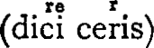

INTRODUCTION.
I.
Life of Quintilian.
It would be possible to state in a very few lines all that is certainly known about Quintilian’s personal history; but much would remain to be said in order to convey an adequate idea of the large place he must have filled in the era of which he is so typical a representative. The period of his activity at Rome is nearly co-extensive with the reign of the Flavian emperors,—Vespasian, Titus, and Domitian. For twenty years he was the recognised head of the teaching profession in the capital, and a large proportion of those who came to maturity in the days of Trajan and Hadrian must have received their intellectual training in his school. It is in itself a sign of the tendencies of the age that Quintilian should have enjoyed the immediate patronage of the reigning emperor in the conduct of work which would formerly have attracted little notice. In earlier days the profession of teaching had been held in low repute at Rome1. The first attempt to open a school of rhetoric, in B.C. 94, was looked on with the greatest suspicion and disfavour. Even Cicero adopts a tone of apology in the rhetorical text-books which he wrote for the instruction of others. But now all was changed, and education had come to be, as it was in a still greater degree under Nerva, Trajan, and the Antonines, a department of the government itself. Vespasian was the founder of a new dynasty; and, though he had little culture to boast of himself, he was shrewd enough to appreciate the advantages to be derived from systematising the education of the Roman youth, and maintaining friendly relations ii with those to whom it was entrusted. Quintilian, for his part, seems to have diligently seconded, in the scholastic sphere, his patron’s efforts to efface the memory of the time of trouble and unrest which had followed the extinction of the Julian line in the person of Nero. After his retirement from the active duties of his profession, he received the consular insignia from Domitian,—the promotion of a teacher of rhetoric to the highest dignity in the State being regarded as a most unexampled phenomenon by the conservative opinion of the day, which had failed to recognise the significance of the alliance between prince and pedagogue. The interest with which the publication of the Institutio Oratorio was looked forward to, at the close of his laborious professional career, is sufficient evidence of the authoritative position Quintilian had gained for himself at Rome. It was a tribute not only to the successful teacher, but also to the man of letters who, conscious that his was an age of literary decadence, sought to probe the causes of the national decline and to counteract its evil influences.
Like so many of the distinguished men of his time, Quintilian was a Spaniard by birth. There must have been something in the Spanish national character that rendered the inhabitants of that country peculiarly susceptible to the influences of Roman culture: certainly no province assimilated more rapidly than Spain the civilisation of its conquerors. The expansion of Rome may be clearly traced in the history of her literature. Just as Italy, rather than the imperial city itself, had supplied the court of Augustus with its chiefest literary ornaments, so now Spain sends up to the centre of attraction for all things Roman a band of authors united, if by nothing else, at least by the ties of a common origin. Pomponius Mela is said to have come from a place called Cingentera, on the bay of Algesiras; Columella was a native of Gades, Martial of Bilbilis; the two Senecas and Lucan were born in Corduba. The emperor Trajan came from Italica, near Seville; while Hadrian belonged to a family which had long been settled there. Quintilian’s birthplace was the town of Calagurris (Calahorra) on the Ebro, memorable in previous history only for the resistance which it enabled Sertorius to offer to Metellus and Pompeius: it was the last place that submitted after the murder of the insurgent general in B.C. 72.
In most of the older editions of Quintilian an anonymous Life appears, the author of which (probably either Omnibonus Leonicenus or Laurentius Valla) prefers a conjecture of his own to the ‘books of the time,’ and makes out that Quintilian was born in Rome. His main argument is that Martial does not include his name among those of the distinguished authors to whom he refers as being of Spanish origin (e.g. Epigr. i. iii 61 and 49), though he addresses him separately in complimentary terms (Epigr. ii. 90). Against this we may set, however, the line in which Ausonius embodies what was evidently a well-known and accepted tradition (Prof. i. 7):—
Adserat usque licet Fabium Calagurris alumnum;
and the statement of Hieronymus in the Eusebian Chronicle:—Quintilianus, ex Hispania Calagurritanus, primus Romae publicam scholam [aperuit]. The latter extract carries additional weight if we accept the conjecture of Reifferscheid2 that Jerome here follows the authority of Suetonius (Roth, p. 272) in his work on the grammarians and rhetoricians.
The fact of Quintilian’s Spanish origin may therefore be regarded as fully established, though we cannot cite the authority of Quintilian himself on the subject. His removal to Rome, at a very early period of his life, would naturally make him more of a Roman than a Spaniard; and this is probably the reason why he nowhere refers to the accident of his birth-place. Indeed his work does not lend itself to autobiographical revelations. Most of his reminiscences, some of which occur in the Tenth Book (1 §§23 and 86, 3 §12: cp. v. 7, 7: vi. 1, 14: xii. 11, 3) are suggested by some detail connected with his subject. Apart from the famous introduction to Book VI, where his grief for the loss of his wife and two sons is allowed to interrupt the continuity of his argument, he speaks of his father only once (ix. 3, 73), and then simply to quote, not without some diffidence, a bon mot of his in illustration of a figure of speech. The father was himself a rhetorician, and seems to have taught the subject both at Calagurris and also after the family removed to Rome: whether he is identical with the Quintilianus mentioned as a declaimer of moderate reputation by the elder Seneca (Controv. x. praef. 2: cp. ib. 33, 19) cannot now be ascertained.
The date of Quintilian’s birth has been variously given as A.D. 42, A.D. 38, and A.D. 35, the last being now most commonly adopted. It cannot be determined with certainty, though a few considerations may here be adduced to show why it seems necessary to discard any theory that would put it after A.D. 38. Dodwell, in his ‘Annales Quintilianei’ (see Burmann’s edition, vol. ii. p. 1117), arrived at the year A.D. 42, after a careful examination of all the passages on which he thought it allowable to base an inference. But Quintilian tells us himself that he was a young man (nobis adulescentibus vi. 1, 14) at the trial of Cossutianus Capito, iv which we know from Tacitus (Ann. xiii. 33) took place in A.D. 57: a fact which is in itself enough to show that Dodwell is at least two years too late. Another indication is derived from the references which Quintilian makes to his teacher Domitius Afer, who is known to have died at a ripe old age in A.D. 59: cp. xii. 11, 3 vidi ego ... Domitium Afrum valde senem: v. 7, 7 quem adulescentulus senem colui: x. 1, 86 quae ex Afro Domitio iuvenis excepi. Unfortunately we do not know the date of the trial of Volusenus Catulus referred to in x. 1, 23: Quintilian was a boy at the time (nobis pueris). In the preface to Book VI he writes like an old man: this appears especially in the reference he makes to the wife whom he had lost and who was only nineteen,—aetate tam puellari praesertim meae comparata §5. If we may infer that Quintilian was nearer sixty than fifty when he wrote these words, in A.D. 93 or 94, we may be certain that he was born not later than A.D. 38, and probably two or three years earlier.
Quintilian received his early education at Rome, and his father’s position as a teacher of rhetoric, as well as the whole tendency of the education of the day, no doubt gave it a rhetorical turn from the very first. Even boys at school practised declamation, as may be seen from the following passage of the Institutio:—
‘Non inutilem scio servatum esse a praeceptoribus meis morem, qui cum pueros in classes distribuerant, ordinem dicendi secundum vires ingenii dabant; et ita superiore loco quisque declamabat ut praecedere profectu videbatur. Huius rei iudicia praebebantur: ea nobis ingens palma, ducere vero classem multo pulcherrimum. Nec de hoc semel decretum erat: tricesimus dies reddebat victo certaminis potestatem. Ita nec superior successu curam remittebat, et dolor victum ad depellendam ignominiam concitabat. Id nobis acriores ad studia dicendi faces subdidisse quam exhortationem docentium, paedagogorum custodiam, vota parentium, quantum animi mei coniectura colligere possum, contenderim.’—i. 2, 23-25.
The same style of exercise was kept up at a later stage, when the boy passed into the hands of a professed teacher of rhetoric, such as the notorious Remmius Palaemon, who is said by the scholiast on Juvenal (vi. 451) to have been Quintilian’s master:—
‘Solebant praeceptores mei neque inutili et nobis etiam iucundo genere exercitationis praeparare nos coniecturalibus causis, cum quaerere atque exsequi iuberent “cur armata apud Lacedaemonios Venus” et “quid ita crederetur Cupido puer atque volucer et sagittis ac face armatus” et similia, in quibus scrutabamur voluntatem.’—ii. 4, 26.
He now came into contact with, and listened to the eloquence of, the most celebrated orators of the day. In his relations with the greatest of v these, Domitius Afer, Quintilian seems to have acted on the maxim which he himself lays down for the budding advocate: oratorem sibi aliquem, quod apud maiores fieri solebat, deligat, quem sequatur, quem imitetur x. 5, 19. To Afer he attached himself (adsectabar Domitium Afrum Plin. Ep. ii. 14, 10), and was in all probability by him initiated in the business of the law-courts and public life generally: cp. v. 7, 7 adulescentulus senem colui (Domitium). In this passage Afer is said to have written two books on the examination of witnesses; and from vi. 3, 42 it would appear that his ‘dicta’ or witticisms were sufficiently distinguished to merit the honour of publication. He had held high office under Tiberius, Caligula, and Nero, and his pre-eminence at the bar was undisputed: xii. 11, 3 principem fuisse quondam fori non erat dubium. In his review of Latin oratory, Quintilian gives him high praise: arte et toto genere dicendi praeferendus, et quem in numero veterum habere non timeas x. 1, 118. The pupil was fortunate therefore in his master, and he drew upon his reminiscences of Afer’s teaching when he himself came to instruct others (Plin. l.c.). Among other notable orators of the day were Servilius Nonianus (x. 1, 102), Iulius Africanus (x. 1, 118: xii. 10, 11), Iulius Secundus (x. 1, 120: 3, 12: xii. 10, 11), Galerius Trachalus (x. 1, 119: xii. 10, 11), and Vibius Crispus (ibid.).
When he was about twenty-five years of age some motive induced Quintilian to return to Calagurris, his native town; and there he spent several years in the practice of his profession as teacher and barrister. We know that he came back to Rome with Galba in A.D. 68: the evidence for this is again the statement made by Hieronymus in the Eusebian Chronicle, M. Fabius Quintilianus Romam a Galba perducitur. Galba had been governor of Hispania Tarraconensis under Nero (A.D. 61-68), and it is not improbable that Quintilian, when he returned to his native country, was in some way attached to his official retinue; the numerous bons mots which he records in the third chapter of the Sixth Book (§§62, 64, 66, 80, 90) seem to point to a certain amount of personal intercourse between himself and the future emperor3.
At Rome Quintilian must soon have proved himself thoroughly qualified for the work of teaching and training the young. The imperial countenance afterwards shown him by Vespasian was in all probability only an official expression of the esteem felt in the Roman community for one who was serving with such distinction in a sphere of which the importance was coming now to be more adequately recognised. Quintilian was not only a learned man and a great teacher: he was a great vi moral power in the midst of a people which had long been demoralised by the vices of its rulers. The fundamental principle of his teaching, non posse oratorem esse nisi virum bonum (i. pr. §9 and xii. 1), shows the high ideal he cherished and the wide view he took of the opportunities of his position. He felt himself strong enough to make a protest against the literary influence of Seneca, then the popular favourite, and to endeavour to recall a vitiated taste to more rigorous standards: corruptum et omnibus vitiis fractum dicendi genus revocare ad severiora iudicia contendo (x. 1, 125). And when, in the evening of his days, he wrote his great treatise on the ‘technical training’ of the orator, it was from himself and his own successful practice that he drew many of his most cogent illustrations, e.g. vi. 2, 36, and (in regard to his powers of memory) xi. 2, 39 and iv. 2, 86.
In the earlier years of his career at Rome, before he became absorbed in the work of teaching, Quintilian must have had a considerable amount of practice at the bar. He tells us himself of a speech which he published, ductus iuvenali cupiditate gloriae viii. 2, 24. It was of a common type. A certain Naevius Arpinianus was accused of having killed his wife, who had fallen from a window; and we may infer with certainty from the tone of Quintilian’s reference to the circumstances of the case that he succeeded in securing the acquittal of Naevius—more fortunate than the wife-killer of whom we read in Tacitus (Ann. iv. 22). A more distinguished cause was that of Berenice, the Jewish Queen before whom St. Paul appeared (Acts xxv. 13), and whose subsequent visit to Rome was connected with the ascendency she had established over the heart of the youthful Titus (Tac. Hist. ii. 2: Suet. Tit. 7). We can only speculate on the nature of the issue involved, as Quintilian confines himself to a bare statement of fact—ego pro regina Berenice apud ipsam causam dixi iv. 1, 19. It was in all probability a civil suit brought or defended by Berenice against some Jewish countryman; and the phenomenon of the queen herself presiding over a trial in which she was an interested party is accounted for by the hypothesis that, at least in civil suits, Roman tolerance allowed the Jews to settle their own disputes according to their national law. On such occasions the person of highest rank in the community to which the disputants belonged might naturally be designated to preside over the tribunal4.
viiIn another case, Quintilian seems to have shown some of the dexterity attributed to him in the oft-quoted line of Juvenal (vi. 280) Dic aliquem, sodes, dic, Quintiliane, colorem. He was counsel for a woman who had been party to an arrangement by which the provisions of the Voconian law (passed B.C. 169 to prevent the accumulation of property in the hands of females) had been evaded by the not uncommon method of a fraudulent disposition to a third person5. Quintilian’s client was accused of having produced a forged will. This charge it was easy to rebut, though it rendered necessary the explanation that the heirs named in the will had really undertaken to hand the property over to the woman; and if this explanation were openly given it would involve the loss of the estate. There is an evident tone of satisfaction in Quintiiian’s description of what happened: ita ergo fuit nobis agendum ut iudices illud intellegerent factum, delatores non possent adprehendere ut dictum, et contigit utrumque (ix. 2, 74).
Unlike his great model Cicero, who was considered most effective in the peroratio of a great case, where the work was divided among several pleaders, Quintilian was generally relied on to state a case (ponere causam) in its main lines for subsequent elaboration: me certe, quantacunque nostris experimentis habenda est fides, fecisse hoc in foro, quotiens ita desiderabat utilitas, probantibus et eruditis et iis qui iudicabant, scio: et (quod non adroganter dixerim, quia sunt plurimi quibuscum egi qui me refellere possint si mentiar) fere a me ponendae causae officium exigebatur iv. 2, 86. His methodical habit of mind would render him specially effective for this department of work. Other orators may have been more brilliant, more full of fire, and more able to work upon the feelings of an audience: if Quintilian had not the ‘grand style’—if he represents the type of an orator that is ‘made’ rather than ‘born’—we may at least believe that he was unsurpassed for judicious, moderate, and effective statement. His model in this as in other matters was probably Domitius Afer, of whom Pliny says (Ep. ii. 14, 10) apud decemviros dicebat graviter et lente, hoc enim illi actionis genus erat. His character and training would secure him a place apart from the common herd. ‘Among the orators of the day, some ignorant and coarse, having left mean occupations, without any preliminary study, for the bar, where they made up in audacity for lack of talent, and in noisy conceit for a defective knowledge viii of law—others trained in the practice of delation to every form of trickery and violence—Quintilian, honest, able, and moderate stood by himself6.’
It was after Quintilian had attained some distinction in the practice of his profession, probably in the year 72, that his activity became invested with an official and public character. We learn the facts from Suetonius’s Life of Vespasian (ch. 18): primus e fisco latinis graecisque rhetoribus annua centena constituit: and the Eusebian chronicle (see Roth’s Suetonius, p. 272), Quintilianus, ex Hispania Calagurritanus, qui primus Romae publicam (‘state-supported’) scholam [aperuit] et salarium e fisco accepit, claruit—the zenith of his fame being placed between the years 85 and 89 A.D. Vespasian, in fact, created and endowed a professorial Chair of Rhetoric, and Quintilian was its first occupant. He thus became the official head of the foremost school of oratory at Rome, and the ‘supreme controller of its restless youth’:
Quintiliane, vagae moderator summe iuventae,
Gloria Romanae, Quintiliane, togae. —Mart. ii. 90, 1-2.
In this capacity he must have exercised the greatest possible influence on the rising youth of Rome. The younger Pliny was his pupil, and evidently retained a grateful memory of the instruction which he received from him: Ep. ii. 14, 9 and vi. 6, 3. The same is true, in all probability, of Pliny’s friend Tacitus, who has much in common with Quintilian: possibly also of Suetonius. If Juvenal was not actually his pupil,—he is believed to have practised declamation till well on in life,—we may infer from the complimentary references which occur in his Satires that he at least appreciated Quintilian’s work and recognised its healthy influence7.
After a public career at Rome, extending over a period of twenty years8, Quintilian definitely retired from both teaching and pleading at ix the bar. He seems to have profited by the example of his model, Domitius Afer, who would have done better if he had retired earlier (xii. 11, 3): Quintilian thought it was well to go while he would still be missed,—et praecipiendi munus iam pridem deprecati sumus et in foro quoque dicendi, quid honestissimum finem putabamus desinere dum desideraremur, ii. 12, 12. The wealth which he had acquired by the practice of his profession (Juv. vii. 186-189) enabled him to go into retirement with a light heart. The first-fruits of his leisure was a treatise in which he sought to account for that decline in eloquence for which the Institutio Oratoria was afterwards to provide a remedy. It was entitled De causis corruptae eloquentiae, and was long confounded with the Dialogue on Oratory, now ascribed to Tacitus: he refers to this work in vi. pr. §3: viii. 6, 76: possibly also in ii. 4, 42: v. 12, 23: vi. pr. §3: viii. 3, 58, and 6, 769. This treatise is no longer extant, and we have lost also the two books Artis Rhetoricae, which were published under Quintilian’s name (1 pr. §7), neque editi a me neque in hoc comparati: namque alterum sermonem per biduum habitum pueri quibus id praestabatur exceperant, alterum pluribus sane diebus, quantum notando consequi potuerant, interceptum boni iuvenes sed nimium amantes mei temerario editionis honore vulgaverant10. In a recent edition of the ‘Minor Declamations’ (M. Fabii Quintiliani declamationes quae supersunt cxlv Lipsiae, 1884), Const. Ritter endeavours to show that this is the work referred to in the passage quoted above, from the preface to the Institutio: cp. Die Quintilianischen Declamationen, Freiburg i.B., und x Tübingen, 1881, p. 246 sqq.11 Meister’s view, however, is that, like the ‘Greater Declamations,’ which are generally admitted to have been composed at a later date, the ‘Minor Declamations’ also were written subsequently either by Quintilian himself or (more probably) by imitators who had caught his style and were glad to commend their compositions by the aid of his great name. Even in his busy professional days Quintilian had suffered from the zeal of pirate publishers: he tells us (vii. 2, 24) that several pleadings were in circulation under his name which he could by no means claim as entirely his own: nam ceterae, quae sub nomine meo feruntur, neglegentia excipientium in quaestum notariorum corruptae minimam partem mei habent.
While living in retirement, and engaged on the composition of his work, Quintilian received a fresh mark of Imperial favour, this time from Domitian. This prince had adopted two grand-nephews, whom he destined to succeed him on the throne,—the children of his niece Flavia Domitilla, and of Flavius Clemens, a cousin whom he associated with himself about this time in the duties of the consulship. They were rechristened Vespasian and Domitian (Suet. Dom. 15), and the care of their education was entrusted to Quintilian (A.D. 93). He accepted it with fulsome expressions of gratitude and appreciation12; but did not exercise it for long13, as the children, with their parents, became the victims of the tyrant’s capriciousness shortly before his murder, and were ruined as rapidly as they had risen. Flavius Clemens was put to death, and his wife Domitilla, probably accompanied by her two sons, was sent into exile. They seem to have embraced the Jewish faith; and it is interesting to speculate on the possibility that through intercourse with them, and with their children, Quintilian may have come into contact with a religion which was the forerunner of that which was destined soon afterwards to achieve so universal a triumph.
It was while he was acting as tutor to the two princes that Quintilian received, through the influence of their father Flavius Clemens, the compliment of the consular insignia. This we learn from Ausonius, himself the recipient of a similar favour from his pupil Gratian: Quintilianus per Clementem ornamenta consularia sortitus, honestamenta nominis potius videtur quam insignia potestatis habuisse. It was probably in allusion to xi this promotion, unexampled at that time in the case of a teacher of rhetoric, that Juvenal wrote (vii. 197-8)—
Si Fortuna volet, fies de rhetore consul;
Si volet haec eadem, fies de consule rhetor:
while another parallel is chronicled by Pliny, Ep. iv. 11, 1 praetorius hic modo ... nunc eo decidit ut exsul de senatore, rhetor de oratore fieret. Itaque ipse in praefatione dixit dolenter el graviter: ‘quos tibi Fortuna, ludos facis?’ facis enim ex professoribus senatores, ex senatoribus professores.
The flattery with which Quintilian loads the emperor for these and similar favours is the only stain on a character otherwise invariably manly, honourable, and straightforward. It is startling for us to hear that monster of iniquity, the last of the Flavian line, invoked as an ‘upright guardian of morals’ (sanctissimus censor iv. pr. §3), even when he was ‘tearing in pieces the almost lifeless world.’ There may have been a grain of sincerity in the compliments which Quintilian, like Pliny, pays to his literary ability. Domitian’s poetical productions are said not to have been altogether wanting in merit; and his attachment to literary pursuits is shown by the festivals he instituted in honour of Minerva and Jupiter Capitolinus, in which rhetorical, musical, and artistic contests were a prominent feature (see on x. 1, 91). But this is no justification for the fulsome language employed by Quintilian in the introduction to the Fourth Book, where the emperor is spoken of as the protecting deity of literary men: ut in omnibus ita in eloquentia eminentissimum ... quo neque praesentius aliud nec studiis magis propitium numen est; nor for his profession of belief that nothing but the cares of government prevented Domitian from becoming the greatest poet of Rome: Germanicum Augustum ab institutis studiis deflexit cura terrarum, parumque dis visum est esse eum maximum poetarum x. 1, 91 sq. Few would recognise Domitian in the following reference: laudandum in quibusdam quod geniti immortales, quibusdam quod immortalitatem virtute sint consecuti: quod pietas principis nostri praesentium quoque temporum decus fecit iii. 7, 9. Such servility can only be partially explained by Quintilian’s official relations to the Court and by the circumstances of the time at which he wrote. It was a vice of the age: Quintilian shares it with Martial, Statius, Silius Italicus, and Valerius Flaccus. The indignant silence which Tacitus and Juvenal maintained during the horrors of this reign is a better expression of the virtue of old Rome, which seems to have burned with steadier flame in the hearts of her genuine sons than in those of the ‘new men’ xii from the provinces, with neither pride of family nor pride of nationality to save them from the corrupting influences of their surroundings14.
That Quintilian acquired considerable wealth, partly as a teacher and partly by work at the bar, is evident from the pointed references made by Juvenal in the seventh Satire. After showing how insignificant are the fees paid by Roman parents for their children’s education, when compared with their other expenses, the satirist suddenly breaks off,—unde igitur tot Quintilianus habet saltus? How does it come about (if his profession is so unremunerative) that Quintilian owns so many estates? The only answer which Juvenal can give to this conundrum is that the great teacher was one of the fortunate: ‘he is a lucky man, and your lucky man, like Horace’s Stoic, unites every good quality in himself, and can expect everything15.’ We must remember however, that, while Quintilian acquired wealth in the practice of his profession, no charge is made against him as having placed his abilities at the disposal of an unscrupulous ruler for his own advancement. Under Nero, Marcellus Eprius assisted in procuring the condemnation of Thrasea, and received over £42,000 for the service (Tac. Ann. xvi. 33): if Quintilian’s name had ever been associated with such a trial, Juvenal would have been more direct in his reference. But with Quintilian, as with so many others, the advantages of position and fortune were counterbalanced by grave domestic losses. In a less rhetorical age the memorable introduction to the Sixth Book of the Institutio would perhaps have taken a rather more simple form; but it is none the less a testimony to the warm human heart of the writer, now a childless widower. He had married, when already well on in life, a young girl whose death at the early age of nineteen made him feel as if in her he had lost a daughter rather than a wife: cum omni virtute quae in feminas cadit functa insanabilem attulit marito dolorem, tum aetate tam puellari, praesertim meae comparata, potest et ipsa numerari inter vulnera orbitatis vi. pr. 5. She left him two sons, the younger of whom did not long survive her; he had just completed his fifth year when he died. The father now concentrated all his affection xiii on the elder, and it was with his education in view that he made all haste to complete his great work, which he considered would be the best inheritance he could leave to him,—hanc optimum partem relicturus hereditatis videbar, ut si me, quod aequum et optabile fuit, fata intercepissent, praeceptore tamen patre uteretur ib. §1. But the blow again descended, and his house was desolate: at me fortuna id agentem diebus ac noctibus festinantemque metu meae mortalitatis ita subito prostravit ut laboris mei fructus ad neminem minus quam ad me pertineret. Illum enim, de quo summa conceperam et in quo spem unicam senectutis reponebam, repetito vulnere orbitatis amisi ib. §2.
This would be about the year 94 A.D., and the Institutio Oratoria is said to have seen the light in 95. After that we hear no more of Quintilian. Domitian was assassinated in 96, and under the new régime it is possible that the favourite of the Flavian emperors may have been under a cloud. But his work was done; even if he lived on for a few years longer in retirement, his career had virtually closed with the publication of his great treatise. It used to be believed that he lived into the reign of Hadrian, and died about 118 A.D., but this idea is founded on a misconception16. Probably he did not even see the accession of Nerva in 96: if he did, he must have died soon afterwards, for there are two letters of Pliny’s (one written between 97 and 100, and the other about 105) in which Pliny does not speak of his old teacher as of one still alive.
II.
The Institutio Oratoria.
Though Quintilian spent little more than two years on the composition of the Institutio Oratorio, his work really embodies the experience of a xiv lifetime. No doubt much of it lay ready to his hand, even before he began to write, and he would willingly have kept it longer; but the solicitations of Trypho, the publisher, were too much for him. His letter to Trypho shows that he fully appreciated the magnitude of his task; and there is even the suggestion that (like many a busy teacher since his time) he only realised when called upon to publish that he had not covered the whole ground of his subject17. The opening words of the introduction (post impetratam studiis meis quietem, quae per viginti annos erudiendis iuvenibus impenderam, &c.) show that the Institutio was the work of his retirement: and various indications lead us to fix the date of its composition as falling between A.D. 93 and 95. The introduction to the Fourth Book was evidently written when (probably in 93) Domitian had appointed Quintilian tutor to his grand-nephews; the Sixth Book, where he refers to his family losses, must have followed shortly afterwards; while the harshness of his references to the philosophers in the concluding portions of the work (cp. xi. 1, 30, xii. 3, 11, with 1, pr. 15, which may have been written, or at least revised, after the rest was finished) seems to suggest that their expulsion by Domitian (in 94) was already an accomplished fact18. The book is dedicated to Victorius Marcellus, to whom Statius also addresses the Fourth Book of his Silvae, evidently as to a person of some consideration and an orator of repute (cp. Stat. Silv. iv. 4, 8, and 41 sq.). Marcellus had a son called Geta (Inst. Or. i. pr. 6: Stat. Silv. iv. 4, 71), and it was originally with a view to the education of this youth (erudiendo Getae tuo) that Quintilian associated the father’s name with his work. Geta is again referred to, along with Quintilian’s elder son, and also the grand-nephews of Domitian, in the introduction to the Fourth Book; but the opening words of the Sixth Book show that they are all gone, and the epilogue, at the conclusion of Book xii, is addressed to Marcellus on behoof of ‘studiosi iuvenes’ in general.
The plan of the Institutio Oratorio cannot be better given than in its author’s own words (i. pr. 21 sq.): Liber primus ea quae sunt ante officium rhetoris continebit. Secundo prima apud rhetorem elementa et quae de ipsa rhetorices substantia quaeruntur tractabimus, quinque deinceps inventioni (nam huic et dispositio subiungitur) quattuor elocutioni, in cuius partem memoria ac pronuntiatio veniunt, dabuntur. Unus accedet in quo nobis orator ipse informandus est, et qui mores eius, quae in xv suscipiendis, discendis, agendis causis ratio, quod eloquentiae genus, quis agendi debeat esse finis, quae post finem studia, quantum nostra valebit infirmitas, disseremus. The first book deals with what the pupil must learn before he goes to the rhetorician; it gives an account of home-training and school discipline, and contains also a statement of Quintilian’s views of grammar. The second book treats of rhetoric in general: the choice of a proper instructor, as well as his character and function, and the nature, principles, aims, and use of oratory. It is in these early books especially that Quintilian reveals the high tone which has made him an authority on educational morals, as well as rhetorical training: see especially i. 2, 8, where he enlarges on Juvenal’s dictum, maxima debetur puero reverentia; ii. 4, 10, where he advocates gentle and conciliatory methods in teaching; and ii. 2, 5,—a picture of the ideal teacher in language which might be applied to Quintilian himself19. The remaining books, except the twelfth, are devoted to the five ‘parts of rhetoric,’—invention, arrangement, style, memory, and delivery (Cic. de Inv. i. 7, 9). In the third book we have a classification of the different kinds of oratory. Next he treats of the ‘different divisions of a speech, the purpose of the exordium, the proper form of a statement of facts, what constitutes the force of proofs, either in confirming our own assertions or refuting those of our adversary, and of the different powers of the peroration, whether it be regarded as a summary of the arguments previously used, or as a means of exciting the feelings of the judge rather than of refreshing his memory.’ This brings us to the end of the sixth book, which closes with remarks on the uses of humour and of altercation20. The discussion of arrangement finishes with the seventh book, which is extremely technical: style (elocutio) is the main subject of the four books which follow. Of these the eighth and ninth treat of the elements of a good style,—such as perspicuity, ornament, &c.; the tenth of the practical studies and exercises (including a course of reading) by which the actual command of these elements may be obtained; while the eleventh deals with appropriateness (i.e. the different kinds of oratory which suit different audiences), memory, and delivery. The twelfth book—which Quintilian calls the most grave and important part of the whole work—treats of the high moral qualifications requisite in the perfect orator: xvi just as the first book, introductory to the whole, describes the early training which should precede the technical studies of the orator, so the last book sets forth that ‘discipline of the whole man’ which is their crown and conclusion21. “Lastly, the experienced teacher gives advice when the public life of an orator should begin, and when it should end. Even then his activity will not come to an end. He will write the history of his times, will explain the law to those who consult him, will write, like Quintilian himself, a treatise on eloquence, or set forth the highest principles of morality. The young men will throng round and consult him as an oracle, and he will guide them as a pilot. What can be more honourable to a man than to teach that of which he has a thorough knowledge? ‘I know not,’ he concludes, ‘whether an orator ought not to be thought happiest at that period of his life when, sequestered from the world, devoted to retired study, unmolested by envy, and remote from strife, he has placed his reputation in a harbour of safety, experiencing while yet alive that respect which is more commonly offered after death, and observing how his character will be regarded by posterity22.’”
The Institutio Oratoria differs from all other previous rhetorical treatises in the comprehensiveness of its aim and method. It is a complete manual for the training of the orator, from his cradle to the public platform. Founding on old Cato’s maxim, that the orator is the vir bonus dicendi peritus, Quintilian considers it necessary to take him at birth in order to secure the best results, as regards both goodness of character and skill in speaking. His work has therefore for us a double value and a twofold interest: it is a treatise on education in general, and on rhetorical education in particular. Throughout the whole, oratory is the end for the sake of which everything is undertaken,—the goal to which the entire moral and intellectual training of the student is to be directed. Quintilian’s high conception of his subject is reflected in the language of the ‘Dialogue on Oratory’: Studium quo non aliud in civitate nostra vel ad utilitatem fructuosius vel ad voluptatem dulcius vel ad dignitatem amplius vel ad urbis famam pulchrius vel ad totius imperii atque omnium gentium notitiam inlustrius excogitari potest (ch. 5). Though the field for the practical display of eloquence had been greatly limited by xvii the extinction of the old freedom of political life, rhetoric represented, in Quintilian’s day, the whole of education. It was to the Romans what μουσική was to the Greeks, and was valued all the more by them because of its eminently practical purpose. The student of rhetoric must therefore be fully equipped. “Quintilian postulates the widest culture: there is no form of knowledge from which something may not be extracted for his purpose; and he is fully alive to the importance of method in education. He ridicules the fashion of the day, which hurried over preliminary cultivation, and allowed men to grow grey while declaiming in the schools, where nature and reality were forgotten. Yet he develops all the technicalities of rhetoric with a fulness to which we find no parallel in ancient literature. Even in this portion of the work the illustrations are so apposite and the style so dignified and yet sweet, that the modern reader, whose initial interest in rhetoric is of necessity faint, is carried along with much less fatigue than is necessary to master most parts of the rhetorical writings of Aristotle and Cicero. At all times the student feels that he is in the company of a high-toned Roman gentleman who, so far as he could do without ceasing to be a Roman, has taken up into his nature the best results of ancient culture in all its forms23.”
It is in connection with the general rather than with the technical training of his pupils that Quintilian establishes a claim to rank with the highest educational authorities,—as for example in his insistence on the necessity of good example both at home24 and in school, and on the respect due to the young25, as well as his catalogue of the qualifications required in the trainer of youth (ii. 2, 5: 4, 10), his protest against corporal punishment (i. 3, 14), and his consistent advocacy of the moral as well as the intellectual aspects of education. His system was conceived as a remedy for the existing state of things at Rome, where eloquence and the arts in general had, as Messalla puts it in the ‘Dialogue on Oratory,’ “declined from their ancient glory, not from the dearth of men, but from the indolence of the young, the carelessness of parents, the ignorance of teachers, and neglect of the old discipline26.” Under it parents and teachers were to be united in the effort to develop the moral and intellectual qualities of the Roman youth: and through education the state was to recover something of her old vigour and virtue.
The work was expected with the greatest interest before its publication, and we may infer, from the high authority assigned to Quintilian in the xviii literature of the period, that it long held an honoured place in Roman schools. But it is curious that the earliest known references are not to the Institutio but to the Declamationes. In an interesting chapter of the Introduction to a recent volume27, M. Fierville has gathered together all the references that occur in the literature of the early centuries of our era. Trebellius Pollio and Lactantius (both of the 3rd century) speak of the Declamations, and Ausonius (4th century) refers to Quintilian without naming his writings: the first definite mention of the Institutio is made by Hilary of Poitiers (died 367) and afterwards by St. Jerome (died 420). Later Cassiodorus (468-562) pronounced a eulogy which may stand as proof of his high appreciation: Quintilianus tamen doctor egregius, qui post fluvios Tullianos singulariter valuit implere quae docuit, virum bonum dicendi peritum a prima aetate suscipiens, per cunctas artes ac disciplinas nobilium litterarum erudiendum esse monstravit, quem merito ad defendendum totius civitatis vota requirerent (de Arte Rhetor.—Rhet. Lat. Min., ed. Halm, p. 498). The Ars Rhetorica of Julius Victor (6th century) is largely borrowed from Quintilian: see Halm, praef. p. ix. Isidore, Bishop of Seville (570-630), studied Quintilian in conjunction with Aristotle and Cicero. After the Dark Age, Poggio’s discovery, at St. Gall in 1416, of a complete manuscript of Quintilian was ranked as one of the most important literary events in what we know now as the era of the Renaissance28. The great scholars of the fifteenth century worked hard at the emendation of the text. The editio princeps was given to the world by G. A. Campani in 1470; and in the concluding words of his preface the editor reflects something of the enthusiasm for his author which had already been expressed by Petrarch, Poggio, and others,—proinde de Quintiliano sic habe, post unam beatissimam et unicam felicitatem M. Tullii, quae fastigii loco suspicienda est omnibus et tamquam adoranda, hunc unum esse quem praecipuum habere possis in eloquentia ducem: quem si assequeris, quidquid tibi deerit ad cumulum consummationis id a natura desiderabis non ab arte deposces. This edition was followed in rapid succession by various others, so that by the end of the 16th century Quintilian had been edited a hundred times over29. The 17th century is not so rich in editions, but Quintilian still reigned in the schools as the great master of rhetoric: students of English literature xix will remember how Milton (Sonnet xi) uses the authority of his name when referring to the roughness of northern nomenclature:—
Those rugged names to our like mouths grow sleek
That would have made Quintilian stare and gasp.
In his ‘Tractate on Education’ too Milton strongly recommends the first two or three books of the Institutio. The 18th century provided the notable editions of Burmann (1720), Capperonier (1725), Gesner (1738), and witnessed also the commencement of Spalding’s (1798-1816), whose text, as revised by Zumpt and Bonnell, practically held the field till the publication of Halm’s critical edition (1868). Towards the close of last century it would appear that Quintilian was as much studied as he had ever been,—probably by many who believed in, as well as by some who would have rejected the application of the maxim ‘orator nascitur non fit.’ William Pitt, for example, shortly after his arrival at Cambridge (1773), and while ‘still bent on his main object of oratorical excellence,’ attended a course of lectures on Quintilian, which caused him on one occasion to interrupt his correspondence with his father30. His lasting popularity must have been due, not only to his own intrinsic merits, but to the fact that his writings harmonised well with the studies of those days: it was promoted also by the serviceable abridgments of the Institutio, either in whole or in part, that were from time to time published,—notably that of Ch. Rollin in 1715. In our own day men whose education was moulded on the old lines—such as J. S. Mill—considered Quintilian an indispensable part of a scholar’s equipment. Macaulay read him in India, along with the rest of classical literature. Lord Beaconsfield professed that he was ‘very fond of Quintilian31.’ But by our classical scholars he has been almost entirely neglected, no complete edition having appeared in this country since a revised text was issued in London in 1822. German criticism, on the other hand, has of late paid Quintilian special attention, with conspicuous results for the emendation and illustration of his text: to the great names of Spalding, Zumpt, and Bonnell, must be added those of Halm, Meister, Becher, Wölfflin, and Kiderlin.
Besides the literary criticism for which it has always attracted attention, and which will form the subject of the next section, the Tenth Book of the Institutio contains valuable precepts in regard to various practical matters which are still of as great importance as they were in Quintilian’s day. Among these are the practice of writing, the use of an amanuensis, xx the art of revision, the limits of imitation, the best exercises in style, the advantages of preparation, and the faculty of improvisation.
The following list of Loci Memoriales (mainly taken from Krüger’s third edition, pp. 108-110) will give some idea of the various points on which, especially in the later chapters of the Tenth Book, Quintilian states his opinion weightily and often with epigrammatic terseness:
1 §112 (p. 110) Ille se profecisse sciat cui Cicero valde placebit.
2 §4 (p. 124) Pigri est ingenii contentum esse iis quae sint ab aliis inventa.
2 §7 (p. 125) Turpe etiam illud est, contentum esse id consequi quod imiteris.
2 §8 (p. 126) Nulla mansit ars qualis inventa est, nec intra initium stetit.
2 §10 (pp. 126-7) Eum vero nemo potest aequare cuius vestigiis sibi utique insistendum putat; necesse est enim semper sit posterior qui sequitur.
2 §10 (p. 127) Plerumque facilius est plus facere quam idem.
2 §12 (ibid.) Ea quae in oratore maxima sunt imitabilia non sunt, ingenium, inventio, vis, facilitas, et quidquid arte non traditur.
2 §18 (p. 131) Noveram quosdam qui se pulchre expressisse genus illud caelestis huius in dicendo viri sibi viderentur, si in clausula posuissent ‘esse videatur.’
2 §20 (p. 132) (Praeceptor) rector est alienorum ingeniorum atque formator. Difficilius est naturam suam fingere.
2 §22 (ibid.) Sua cuique proposito lex, suus decor est.
2 §24 (p. 134) Non qui maxime imitandus, et solus imitandus est.
3 §2 (p. 136) Scribendum ergo quam diligentissime et quam plurimum. Nam ut terra alte refossa generandis alendisque seminibus fecundior fit, sic profectus non a summo petitus studiorum fructus effundit uberius et fidelius continet.
3 §2 (p. 137) Verba in labris nascentia.
3 §3 (ibid.) Vires faciamus ante omnia, quae sufficiant labori certaminum et usu non exhauriantur. Nihil enim rerum ipsa natura voluit magnum effici cito, praeposuitque pulcherrimo cuique operi difficultatem.
3 §7 (p. 139) Omnia nostra dum nascuntur placent, alioqui nec scriberentur.
3 §9 (ibid.) Primum hoc constituendum, hoc obtinendum est, ut quam optime scribamus: celeritatem dabit consuetudo.
3 §10 (ibid.) Summa haec est rei: cito scribendo non fit ut bene scribatur, bene scribendo fit ut cito.
3 §15 (p. 142) Curandum est ut quam optime dicamus, dicendum tamen pro facultate.
3 §22 (p. 146) Secretum in dictando perit.
xxi3 §26 (p. 148) Cui (acerrimo labori) non plus inrogandum est quam quod somno supererit, haud deerit.
3 §27 (ibid.) Abunde, si vacet, lucis spatia sufficiunt: occupatos in noctem necessitas agit. Est tamen lucubratio, quotiens ad eam integri ac refecti venimus, optimum secreti genus.
3 §29 (ibid.) Non est indulgendum causis desidiae. Nam si non nisi refecti, non nisi hilares, non nisi omnibus aliis curis vacantes studendum existimarimus, semper erit propter quod nobis ignoscamus.
3 §31 (p. 149) Nihil in studiis parvum est.
4 §1 (p. 151) Emendatio, pars studiorum longe utilissima; neque enim sine causa creditum est stilum non minus agere, cum delet. Huius autem operis est adicere, detrahere, mutare.
4 §4 (p. 152) Sit ergo aliquando quod placeat aut certe quod sufficiat, ut opus poliat lima, non exterat.
5 §23 (p. 166) Diligenter effecta (sc. materia) plus proderit quam plures inchoatae et quasi degustatae.
6 §1 (p. 167) Haec (sc. cogitatio) inter medios rerum actus aliquid invenit vacui nec otium patitur.
6 §2 (p. 168) Memoriae quoque plerumque inhaeret fidelius quod nulla scribendi securitate laxatur.
6 §5 (ibid.) Sed si forte aliqui inter dicendum effulserit extemporalis color, non superstitiose cogitatis demum est inhaerendum.
6 §6 (p. 169) Refutare temporis munera longe stultissimum est.
6 §6 (ibid.) Extemporalem temeritatem malo quam male cohaerentem cogitationem.
7 §1 (p. 170) Maximus vero studiorum fructus est et velut praemium quoddam amplissimum longi laboris ex tempore dicendi facultas.
7 §4 (p. 171) Perisse profecto confitendum est praeteritum laborem, cui semper idem laborandum est. Neque ego hoc ago ut ex tempore dicere malit, sed ut possit.
7 §12 (p. 175) Mihi ne dicere quidem videtur nisi qui disposite, ornate, copiose dicit, sed tumultuari.
7 §15 (p. 176) Pectus est enim, quod disertos facit, et vis mentis.
7 §§16-17 (p. 177) Extemporalis actio auditorum frequentia, ut miles congestu signorum, excitatur. Namque et difficiliorem cogitationem exprimit et expellit dicendi necessitas, et secundos impetus auget placendi cupido.
7 §18 (ibid.) Facilitatem quoque extemporalem a parvis initiis paulatim perducemus ad summam, quae neque perfici neque contineri nisi usu potest.
7 §20 (p. 178) Neque vero tanta esse umquam fiducia facilitatis xxii debet ut non breve saltem tempus, quod nusquam fere deerit, ad ea quae dicturi sumus dispicienda sumamus.
7 §21 (p. 178) Qui stultis videri eruditi volunt, stulti eruditis videntur.
7 §24 (p. 179) Rarum est ut satis se quisque vereatur.
7 §26 (p. 180) Studendum vero semper et ubique.
7 §27 (p. 180-1) Neque enim fere tan est ullus dies occupatus ut nihil lucrativae ... operae ad scribendum aut legendum aut dicendum rapi aliquo momento temporis possit.
7 §28 (p. 181) Quidquid loquemur ubicumque sit pro sua scilicet portione perfectum.
7 §28 (ibid.) Scribendum certe numquam est magis, quam cum multa dicemus ex tempore.
7 §29 (p. 181-2) Ac nescio an si utrumque cum cura et studio fecerimus, invicem prosit, ut scribendo dicamus diligentius, dicendo scribamus facilius. Scribendum ergo quotiens licebit, si id non dabitur, cogitandum; ab utroque exclusi debent tamen sic dicere ut neque deprehensus orator neque litigator destitutus esse videatur.
III. Quintilians’s Litary Criticism.
It was the conviction that a cultured orator is better than an orator with no culture that induced Quintilian to devote so considerable a part of the Tenth Book to a review of Greek and Roman literature. He was aware that in order to speak with effect it is necessary for a man to know a good deal that lies outside the scope of the particular case which he may undertake to plead; and while the ‘firm facility’ ἕξις at which he taught the orator to aim could only be attained by a variety of exercises and qualifications, a course of wide and careful reading must always, he considered, form one of the factors in the combination.
In judging of the merits of Quintilian’s literary criticism we must not forget the point of view from which he wrote. He is not dealing with literature in and for itself. His was not the cast of mind in which the faculty of literary appreciation finds artistic expression in the form in which criticism becomes a part of literature itself. We cannot think of the author of the Tenth Book of the Institutio as one whom a divinely implanted instinct for literature impelled, towards the evening of his days, to leave a record of the personal impressions he had derived from contact with those whom we now recognise as the master-minds of classical antiquity. Quintilian writes, not as the literary man for a sympathetic brotherhood, but as the professor of rhetoric for students in his school. If, in the xxiii course of his just and sober, but often trite and obvious criticisms, he characterises a writer in language which has stood the test of time, it is always when that writer touches his main interest most nearly, as one from whom the student of style may learn much. In short, his work in the department of literary criticism is done much in the same spirit as that which, in these later days, has moved many sober and sensible, but on the whole average persons, conversant with the general current of contemporary thought, and not without the faculty of appreciative discrimination, to draw up a list of the ‘Best Hundred Books.’ Their aim, however, has been to guide and direct the work of that peculiar product of modern times, the ‘general reader’: Quintilian’s victim was the professed student of rhetoric.
But this limitation, arising partly out of the special aim which he had imposed upon himself, partly, also, in all probability, from the constitution of his own mind, ought not to blind us to the value of the comprehensive review of ancient literature which Quintilian has left us in this Tenth Book. “His literary sympathies are extraordinarily wide. When obliged to condemn, as in the case of Seneca, he bestows generous and even extravagant praise on such merit as he can find. He can cordially admire even Sallust, the true fountain-head of the style which he combats, while he will not suffer Lucilius to lie under the aspersions of Horace.... The judgments which he passes may be in many instances traditional, but, looking to all the circumstances of the time, it seems remarkable that there should then have lived at Rome a single man who could make them his own and give them expression. The form in which these judgments are rendered is admirable. The gentle justness of the sentiments is accompanied by a curious felicity of phrase. Who can forget the ‘immortal swiftness of Sallust,’ or the ‘milky richness of Livy,’ or how ‘Horace soars now and then, and is full of sweetness and grace, and in his varied forms and phrases is most fortunately bold’? Ancient literary criticism perhaps touched its highest points in the hands of Quintilian.”32
The course of reading which Quintilian recommends is selected with express reference to the aim which he had in view, and which is put prominently forward in connection with nearly every individual criticism. The young man who aspires to success in speaking must have his taste formed: when he reads Homer, let him note that, great poet as Homer is, and admirable in every respect, he is also oratoria virtute eminentissimus (1 §46). Alcaeus is plerumque oratori similis (1 §63): Euripides is, on that ground, to be preferred to Sophocles (1 §67): Lucan is magis oratoribus quam poetis imitandus (1 §70): and the old Greek comedy is xxiv specially recommended as a form of poetry ‘than which probably none is better suited to form the orator’ (1 §65). With the prose writers Quintilian is thoroughly at home, and he nowhere lets in so much light on his own sympathies as in the estimates he gives us of Cicero (1 §§105-112) and Seneca (1 §§125-131). His criticism of Cicero is precisely what might have been expected from the general tone of the references throughout the Institutio. Cicero is Quintilian’s model, to whom he looks up with reverential admiration: he will not hear of his faults. In his own day the great orator had been attacked by Atticists of the severer type for the richness of his style and the excessive attention which they alleged that he paid to rhythm. The ‘plainness’ of Lysias was their ideal, and they failed to recognise the fact that, with the more limited resources of the Latin language, such simplicity and condensation would be perilously near to baldness (cp. note on 1 §105). Cicero they regarded as an Asianist in disguise; in the words of his devoted follower, they “dared to censure him as unduly turgid and Asiatic and redundant; as too much given to repetition, and sometimes insipid in his witticisms; and as spiritless, diffuse, and (save the mark!) even effeminate in his arrangement” (Inst. Or. xii. 10, 12, quoted on 1 §105). That this criticism had not been forgotten in Quintilian’s own day is obvious not only from the Institutio but also from the discussion in the Dialogus de Oratoribus, where Aper is represented as saying “We know that even Cicero was not without his disparagers, who thought him inflated, turgid, not sufficiently concise, but unduly diffuse and luxuriant, and far from Attic” (ch. 18). To such detractors of his great model Quintilian will have nothing to say, and in his criticism of Cicero he gives full expression to his enthusiastic admiration for the genius of one who had brought eloquence to the highest pinnacle of perfection (vi. 31 Latinae eloquentiae princeps: cp. x. 1 §§105-112: xii. 1, 20 stetisse ipsum in fastigio eloquentiae fateor: 10, 12 sqq. in omnibus quae in quoque laudantur eminentissimum).
With such an absorbing enthusiasm for Cicero, it was hardly to be expected that Quintilian would show an adequate appreciation of Seneca. Seneca’s influence was the great obstacle in the way of a general return to the classical tradition of the Golden Age, and this was the literary reform which Quintilian had at heart—corruptum et omnibus vitiis fractum dicendi genus revocare ad severiora iudicia contendo x. 1, 125. It is probable that, in spite of the appearance of candour which he assumes in dealing with him, Quintilian approached Seneca with a certain degree of prejudice33. Quintilian represents the literature of erudition, and his xxv standard is the best of what had been done in the past: Seneca was, like Lucan, the child of a new era, to whom it seemed perfectly natural that new thoughts should find utterance in new forms of expression. Seneca’s motto was ‘nullius nomen fero,’—he gave free rein to the play of his fancy, and rejected all method34: Quintilian looked with horror (in the interest of his pupils) on a liberty that was so near to licence, and set himself to check it by recalling men’s minds to the ‘good old ways,’ and extolling Cicero as the synonym for eloquence itself. In such a conflict of tastes as regards things literary, and apart from the ambiguous character of Seneca’s personal career, it is not surprising that Quintilian should have been unfavourably disposed towards him. He had a grudge, moreover, against philosophers in general, especially the Stoics. They had encroached on what his comprehensive scheme of education impelled him to believe was the province of the teacher of rhetoric,—the moral training of the future orator35.
He was morbidly anxious to show that rhetoric stood in need of no extraneous assistance: even the ‘grammatici’ he teaches to know their proper place (see esp. i. 9, 6). But it was mainly, no doubt, as representing certain literary tendencies of which he disapproved that Seneca must have incurred Quintilian’s censure. It is probable that in many passages of the Institutio, where he is not specially named, it is Seneca that is in the writer’s mind: the tone of the references corresponds in several points with the famous passage of the Tenth Book36. In this passage xxvi Quintilian is evidently putting forward the whole force of his authority in order to counteract Seneca’s influence. He has kept him waiting in a marked manner, to the very end of his literary review: and when he comes to deal with him he does not confine his criticism to a few words or phrases, but devotes nearly as much space to him as he did to Cicero himself. In his estimate of Seneca nothing is more remarkable than the careful manner in which Quintilian mingles praise and blame. But the praise is reluctant and half-hearted: it is Seneca’s faults that his critic wishes to make prominent. He admits his ability (ingenium facile et copiosum §128), and even goes the length of saying that it would be well if his imitators could rise to his level (foret enim optandum pares ac saltem proximos illi viro fieri §127). But praise is no sooner given than it is immediately recalled. It was his faults that secured imitators for Seneca (placebat propter sola vitia ib.); if he was distinguished for wide knowledge (plurimum studii, multa rerum cognitio §128), he was often misled by those who assisted him in his researches; if there is much that is good in him, ‘much even to admire’ (multa ... probanda in eo, multa etiam admiranda sunt §131), still it requires picking out. In short, so dangerous a model is he, that he should be read only by those who have come to maturity, and then not so much, evidently, for improvement, as for the reason that it is good to ‘see both sides,’—quod exercere potest utrimque iudicium, ib.
It has already been suggested that the secret of a great part of Quintilian’s antipathy to Seneca may have been his dislike of the philosophers, whom his imperial patrons found it necessary from time to time to suppress. He was anxious to exalt rhetoric at the expense of philosophy. But he was no doubt also honestly of opinion—and his position as an instructor of youth would make him feel bound to express his view distinctly—that Seneca was a dangerous model for the budding orator to imitate. His merits were many and great: but his peculiarities lent themselves readily to degradation. Quintilian wished to put forward a counterblast to the fashionable tendency of the day, and to recall—in their own interests—to severer models Seneca’s youthful imitators,—those of whom he writes ad ea (i.e. eius vitia) se quisque dirigebat effingenda, quae poterat; deinde quum se iactaret eodem modo dicere, Senecam infamabat §127. Seneca was of course not responsible for the exaggerations of his imitators, and Quintilian would never have encouraged in his pupils exclusive devotion to any particular model, especially if that model were characterised by such peculiar features of style as distinguished Sallust or Tacitus. But he could not forgive xxvii Seneca for his share in the reaction against Cicero37. Admirers of Seneca think that he failed to make allowance for the influences at work on the philosopher’s style, and that he judged him too much from the standpoint of a rhetorician. They admit Seneca’s faults—his tendency to declamation, the want of balance in his style, his excessive subtlety, his affectation, his want of method: but they contend that these faults are compensated by still greater virtues38. M. Rocheblave, who possesses the appreciation of Seneca traditional among Frenchmen, follows Diderot in inclining to believe that the philosopher was the victim of envy and dislike39. For himself he protests in the following terms against what he considers the inadequacy of Quintilian’s estimate: ‘Da mihi quemvis Annaei librorum ignarum, et dicito num ex istis Quintiliani laudibus non modo perspicere, sed suspicari etiam possit quanto sapientiae doctrinaeque gradu steterit scriptor qui in tota latina facundia optima senserit, humanissima docuerit, maxima et multo plurima excogitaverit, ita ut, multis ex antiqua morali philosophia seu graeca seu latina depromptis, adiectis pluribus, potuerit in unum propriumque saporem omnia illa quasi sapientiae humanae libamenta confundere? Credisne a tali lectore scriptorem vivo gurgite exundantem, sensibus scatentem, legentes in perpetuas rapientem cogitationes, eum denique quem ob vim animi ingeniique acumen iure anteponat Tullio Montanius noster40, protinus agnitum iri? ...facile credo pusillas Fabii laudes multum infra viri meritum stetisse (quod detrectationis sit tutissimum genus) omnes mecum confessuros’ (pp. 44-5).
Whether they were altogether deserved or not, there can be no doubt xxviii that the strictures made by so great a literary leader as Quintilian was in his own day must have greatly contributed to the overthrow of Seneca’s influence. There is more than one indication, in the literature of the next generation, that he is no longer regarded as a safe model for imitation. Tacitus, in reporting the panegyric which Nero delivered on Claudius after his death, and which was the work of Seneca, says that it displayed much grace of style (multum cultus), as was to be expected from one who possessed ingenium amoenum et temporis eius auribus accommodatum (Ann. xiii. 3). Suetonius tell us how Caligula disparaged the lenius comtiusque scribendi genus which Seneca represented; and here (Calig. 53) occurs a similar reference to a fame that had passed away,—Senecam tum maxime placentem, just as the elder Pliny, writing about the time of Seneca’s death, speaks of him as princeps tum eruditorum (Nat. Hist. xiv. 51). Later writers, such as Fronto and Aulus Gellius41 were much more unreserved and even immoderate in their censure. And it is a remarkable fact (noted by M. Rocheblave) that the name of the great Stoic nowhere occurs in the writings of his successors, Epictetus and Marcus Aurelius. He who had been the greatest literary ornament of Nero’s reign disappears almost from notice in the second century.
In regard to the general body of Quintilian’s literary criticism, the question of greatest interest for modern readers is the degree of its originality. How far is Quintilian giving us his own independent judgments on the writings of authors whom he had read at first hand? How far is he merely registering current criticism, which must already have found more or less definite expression in the writings and teaching of previous rhetoricians and grammarians? The circumstances of the case make it impossible for us to approach the special questions which it involves with any great prejudice in favour of Quintilian’s originality in general. The extent of his indebtedness to previous writers, as regards the main body of his work, may be inferred from a glance at the ‘Index scriptorum et artificum’ in Halm’s edition. In many places he is merely simplifying the rules of the Greek rhetoricians whom he followed. Probably he was not equally well up in all the departments of the subject of which he treats, and he naturally relied, to some extent, on the works of those who had preceded him. But did he take his literary criticism from others? Was Quintilian one of those reprehensible persons who do not scruple to borrow, and to give forth as their own, the estimate formed and expressed xxix by some one else of authors whose works they may never themselves have read?
In endeavouring to find an answer to this question, it will be convenient to consider Quintilian’s criticism of the Greek writers apart from that which he applies to his own countrymen, with whose works he might a priori be expected to be more familiar. The notes to that part of the Tenth Book in which he deals with Greek literature (1 §§46-84) will show too many instances of parallelism for us to believe that, in addressing himself to this portion of his subject, Quintilian scrupulously avoided incurring any obligations to others42. No doubt in his long career as a teacher he had come into contact with traditional opinion as to the merits and characteristics not only of the Greek but also of the Latin writers; and in the two years which he tells us he devoted to the composition of the Institutio43 he may still further have increased his debt to extraneous sources. It was in fact impossible that Quintilian should have been unaware of the nature of the criticism current in his own day, and of what had previously been said and written by others. But he is not to be thought of as one who, before indicating his opinion of a particular writer, carefully refers, not to that writer’s works, but to the opinion of others concerning them. The cases in which he reproduces, in very similar language, the verdict of others are not always to be explained on the hypothesis of conscious borrowing44. The coincidences which can be traced certainly do detract from the originality of his work. xxx But we do not need to believe that, in writing his individual criticisms, Quintilian always had recourse to the works of others: he no doubt had them at hand, and his career as a teacher had probably impressed on his memory many dicta which he could hardly fail to reproduce, in one form or another, when he came to gather together the results of his teaching.
Literary criticism at Rome before Quintilian’s time is associated mainly with the names of Varro, Cicero, and Horace45. Varro was the author of numerous works bearing on the history and criticism of literature: such were his de Poetis, de Poematis, περὶ χαρακτήρων, de Actionibus Scaenicis, Quaestiones Plautinae. Our knowledge of their scope and character is however derived only by inference from a few scattered fragments, and in regard to these it is impossible to say definitely to which of his treatises they severally belong. Quintilian’s references to his literary activity as well as his great learning (vir Romanorum eruditissimus x. 1, 95), and the quotation of his estimate of Plautus (ib. §99), are sufficient evidence that he was not unacquainted with Varro’s writings. Cicero he knew probably better than he knew any other author: the extent of his indebtedness to such works as the Brutus may be inferred from the parallelisms which occur in his treatment of the Attic orators (x. 1, 76-80). He dissents expressly from Horace’s estimate of Lucilius (ib. §94): and the frequency of his references to other literary judgments of Horace (cp. §§24, 56, 61, 63) shows that he must have been in the habit of illustrating his teaching by quotations from the works of that cultured critic of literature and life.
But the author with whom Quintilian’s literary criticism has most in common is undoubtedly Dionysius of Halicarnassus. It is true that in the Tenth Book he nowhere expressly mentions him; but references to him by name as an authority on rhetorical matters are common enough in other parts of the Institutio46. Quintilian no doubt knew his works well, especially that which originally consisted of three books περὶ μιμήσεως47. The second book of this treatise has long been known to scholars xxxi in the shape of a fragmentary epitome, which presents so many striking resemblances to the literary judgments contained in the first chapter of Quintilian’s Tenth Book, that early commentators, such as, for instance, H. Stephanus, concluded that Quintilian had borrowed freely from the earlier writer: multa hinc etiam mutuatum constat; quibus modo nomine suppresso pro suis utitur, modo addito verbo putant sua non esse declarat. The parallelisms in question were fully drawn out by Claussen in the work mentioned above, though Usener justly remarks that he wrongly includes a good deal that was the common property not only of Dionysius and Quintilian, but of the whole learned world of the day: they will all be found duly recorded in the notes to this edition, 1 §§46-84.
The general resemblances between Quintilian and Dionysius are apparent in their order of treatment. In his introduction to the Iudicium de Thucydide, the latter sets forth the plan of his second book in terms which present many points of analogy with the scheme of the Tenth Book of the Institutio: ἐν τοῖς προεκδοθεῖσι Περὶ τῆς μιμήσεως ὑπομνηατισμοῖς ἐπεληλυθὼς οὓς ὑπελάμβανον ἐπιφανεστάτους εἶναι ποιητάς τε καὶ συγγραφεῖς ... καὶ δεδηληκὼς ἐν ὀλίγοις τίνας ἕκαστος αὐτῶν εἰσφέρεται πραγματικάς τε καὶ λεκτικὰς ἀρετὰς καὶ πῇ μάλιστα χείρων ἑαυτοῦ γίνεται ... ἵνα τοῖς προαιρουμένοις γράφειν τε καὶ λέγειν εὖ καλοὶ καὶ δεδοκιμασμένοι κανόνες ὦσιν ἐφ᾽ ὧν ποιήσονται τὰς κατὰ μέρος γυμνασίας, μὴ πάντα μιμούμενοι τὰ παρ᾽ ἐκείνοις κείμενα τοῖς ἀνδράσιν, ἀλλὰ τὰς μὲν ἀρετὰς αὐτῶν λαμβάνοντες, τὰς δ᾽ ἀποτυχίας φυλαττόμενοι‧ ἁψάμενός τε τῶν συγγραφέων ἐδήλωσα καὶ περὶ Θουκουδίδου τὰ δοκοῦντά μοι συντόμῳ τε καὶ κεφαλαιώδει γραφῇ περιλαβών, ... ὡς καὶ περὶ τῶν ἄλλων ἐποίησα‧ οὐ γὰρ ἦν ἀκριβῆ καὶ διεξοδικὴν δήλωσιν ὑπὲρ ἑκάστου τῶν ἀνδρῶν ποιεῖσθαι προελόμενον εἰς ἐλάχιστον ὄγκον συναγαγεῖν τὴν πραγματείαν. In like manner Quintilian, addressing himself throughout to young men aspiring to success as public speakers, enumerates the various authors who seem to be fit subjects for reading and imitation. While admitting that some benefit may be derived from almost every writer (1 §57), he confines himself to the most distinguished in the various departments of literature (§44 paucos enim, qui sunt eminentissimi, excerpere in animo est); and even with regard to these he warns his readers, as Dionysius does, that they are not to imitate all their characteristics, but only what is good (1 §24: 2 §§14-15).
The order of treatment is almost identical in the two writers. First come the poets, with the writers of epic poetry at their head: these are not only named in the same order (Homer, Hesiod, Antimachus, Panyasis), but they are commended in very similar terms. But if Quintilian had been translating directly from Dionysius, it is very probable that he would have mentioned him by name, instead of concealing his obligations xxxii by the use of such a phrase as putant (in speaking of Panyasis—see note on §54). If he goes on to add some criticisms which are not in Dionysius, viz. on Apollonius Rhodius, Aratus, Theocritus, and to mention also Pisander, Nicander, and Euphorion, it is with the express intimation that they do not rank in the canon fixed by the grammatici,—the very reason for which these writers had been omitted by Dionysius. The Greek rhetorician says nothing of the elegiac and iambic poets mentioned by Quintilian,—the former in general terms (princeps habetur Callimachus, secundas confessione plurimorum Philetas occupavit §58), the latter with express reference to the judgment of Aristarchus on the great Archilochus (§59)48. In treating of the lyric poets, Quintilian mentions the number nine (§61), which Dionysius does not; but as regards the substance of his criticisms, he is again almost in exact agreement with his predecessor. Both refer to Pindar, Stesichorus, Alcman, and Simonides, with the trifling difference that in Dionysius Simonides comes second instead of fourth on the list. In §65 Quintilian proceeds to deal with the Old Comedy, which finds no place in the treatise of Dionysius, as we now have it. And there is very little that corresponds with Dionysius in the sections on Aeschylus, Sophocles, and Euripides. But it is noticeable that in both Euripides is made to form the transition to Menander and the New Comedy.
In regard to the poets, then, it seems probable that, while Quintilian was no doubt familiar with the work of Dionysius, he is rather incorporating in his criticism the traditions of the literary schools than borrowing directly from a single predecessor. Claussen was of opinion that the latter is the true state of the case, and he even goes so far (p. 348) as to suppose that the original work of Dionysius (of which the treatise long known as the Ἀρχαίων κρίσις or the De Veterum Censura is only a fragmentary epitome) must have contained notices of the elegiac and iambic poets corresponding with those in Quintilian, as well as of the old comic dramatists and of additional representatives of the New Comedy. But a comparison of the various passages on which a judgment may be based seems to make it certain that, while taking advantage of his knowledge of previous literary criticism (scraps of which he may have accumulated for teaching purposes during his long career), he is not slavishly following any single authority49: cp. §52 datur palma (Hesiodo,) xxxiii §53 grammaticorum consensus, §54 ordinem a grammaticis datum, §58 princeps habetur and confessione plurimorum, §59 ex tribus receptis Aristarchi iudicio scriptoribus iamborum, §64 quidam (probably including Dionysius), §67 inter plurimos quaeritur, §72 consensu ... omnium. And the tone and substance of his estimate of Homer, of Euripides, and of Menander50, seem to show that he was prepared to rely, when necessary, on his own independent judgment (cp. meo quidem iudicio §69), especially in dealing with the poets who would be of greatest service for his professed purpose.
In both Dionysius and Quintilian the poets are followed by the historians. The order in Dionysius is Herodotus, Thucydides, Xenophon, Philistus, and Theopompus; in Quintilian, Thucydides, Herodotus, Theopompus, Philistus,—with short notices of Ephorus, Clitarchus and Timagenes. The insertion of the three additional names, and the precedence given to Theopompus, are not the only points in which Quintilian differs here from Dionysius, who is known in this case to have limited himself to the five names in question (Epist. ad Pomp. 767 R: Usener, p. 50, 10): Xenophon is by Quintilian expressly postponed for treatment among the philosophers. In this he probably followed an older tradition, which survived also elsewhere. Cicero speaks of Xenophon as a philosopher (de Orat. ii. §58): in Diogenes Laertius (ii. 48) it is said of him ἀλλὰ καὶ ἱστορίαν φιλοσόφων πρῶτος ἔγραψε—a remark which Usener (p. 113) thinks was probably derived from some library list in which Xenophon was ranked among the writers of philosophy; and Dio Chrysostom (Or. xviii.) omits him from his list of the historians, and includes him in that of the Socratics.
These discrepancies may be relied on to disprove Claussen’s allegation that Dionysius’s treatise is Quintilian’s primus et praecipuus fons. It is quite as probable that, in dealing with the historians, he had before him the passage in the second book of Cicero’s Orator, to which reference has already been made (§55 sq.). There Cicero mentions Herodotus, Thucydides, Philistus, Theopompus, and Ephorus, with the addition of Xenophon, Callisthenes and Timaeus. He may also have had at hand the great orator’s lost treatise Hortensius, two fragments of which contain short characterisations of Herodotus, Thucydides, Philistus, Theopompus, and Ephorus51: in writing it Cicero probably followed some list similar xxxiv to those which were accessible both to Dionysius and Quintilian52. Again there is sufficient resemblance here between Quintilian and Dio Chrysostom (as also in regard to Euripides and Menander: Dio Chr. 6, p. 477 sq.) to justify the supposition that they followed the same tradition. Dio expressly elevates Theopompus to the second rank (10, p. 479), τῶν δὲ ἄκρων Θουκυδίδης ἐμοὶ δοκεῖ καὶ τῶν δευτέρων Θεόπομπος‧ καὶ γὰρ ῥητορικόν τι περὶ τὴν ἀπαγγελίαν τῶν λόγων ἔχει.. With this compare Quintilian’s words: Theopompus his proximus ut in historia praedictis minor, ita oratori magis similis (§74). Ephorus, on the other hand, is expressly eliminated by Dio.
It is perhaps in dealing with the orators that Quintilian gives the surest proofs that he is not following any individual guide. The parallel passages cited in the notes to §§76-80 are by no means confined to the writings of Dionysius, though here again words and phrases occur (see esp. the note on honesti studiosus, in compositione adeo diligens, &c., §79) which seem to suggest that Quintilian must have kept a common-place book into which he ‘conveyed’ points which struck him as just or appropriate in the literary criticism of others53. Unlike Dionysius, however, he refers to the canon of the ten orators (§76) which the recent work of Brzoska, following A. Reifferscheid, has shown to have originated not with the critics of Alexandria, but with those of Pergamum54. It is noticeable that the five orators whom Quintilian selects for notice out of this canon are identical with those enumerated, in reverse order, by Cicero, de Orat. iii. 28.
In their treatment of the philosophers, the chief point in common between Dionysius and Quintilian is that both put Plato and Xenophon before Aristotle. And, though they agree generally in the terms in which they speak of Aristotle, there is no other noteworthy coincidence. The section on Theophrastus and the Stoics has nothing corresponding to it in Dionysius: here, as elsewhere in the account of philosophy, Cicero was laid under contribution.
We may infer, then, on the whole, that in regard to his judgments of the Greek writers Quintilian followed the established order of the literary schools, and incorporated with the expression of his own opinion much that was traditional in their thought and phraseology. He cannot be supposed to have followed any single authority: he must rather be considered to have gleaned in the whole field of the literature of criticism from xxxv Theophrastus (x. 1, 27) down to his own day. He accepted from others, with probably few modifications, the approved lists of poets, historians, orators, and philosophers, and adopted the conventional practice of writing careful and well-considered criticisms upon them—“somewhat cut and dried criticisms,” as Prof. Nettleship says of Dionysius, “which seldom lack sanity, care, and insight, but which are rather dangerously suited for learning by heart and handing on to future generations of pupils.” These lists of ‘classical’ writers may probably be traced back, in the main, to the literary activity of the critics of Alexandria. They would no doubt be well known to the Greek rhetoricians who were at work on the education of the Roman youth as early as the beginning of the first century B.C., and may have served as the basis of their prelections to their pupils. Criticism (κρίσις ποιημάτων, κριτικὴ) was an essential part of the office of the ‘grammaticus55.’
In speaking of his duties, which fall under the two main heads of recte loquendi scientia and poetarum enarratio, Quintilian adds (i. 4, 3): et mixtum his omnibus iudicium est; quo quidem ita severe sunt usi veteres grammatici ut non versus modo censoria quadam virgula notare et libros, qui falso viderentur inscripti, tamquam subditos submovere familia permiserint sibi, sed auctores alios in ordinem redegerint, alios omnino exemerint numero. Beginning with a critical examination of individual texts, the ‘grammatici’ gathered up the results of their work, on the literary side, in short characterisations of the various writers whom they made the subject of their study, and finally drew up lists of the best authors in each department of literature, with a careful indication of their good points as well as of the features in which they were not to be used as models. This process received a more or less final form at the hands of Aristophanes of Byzantium and his follower Aristarchus (see on x. 1, 54), the latter of whom probably introduced such modifications in the list of his predecessor as approved themselves to his own judgment (cp. x. 1, 59 tres receptos Aristarchi iudicio scriptores iamborum). The influence of this method in Roman literature may be seen, early in the first century, in the so-called ‘canon’ of Volcatius Sedigitus, preserved by Gellius (15, 24)56: he makes a list of ten Latin comedians, on the analogy of the canon of the ten Attic orators. The list of the Alexandrine critics was probably in the hands of Cicero, as Usener has shown (pp. 114-126), when he wrote his ‘Hortensius,’—a treatise which seems to have originally contained an introductory sketch of the great contributors to the various departments xxxvi of literature, by way of preparation for the main purpose of the dialogue,—the praise of philosophy57. Then there is Dio Chrysostom, a writer who flourished not long after Quintilian himself, and whose reproduction of similar judgments has already been noted. Such divergences as occur may probably be accounted for, at least in part, by the different points of view from which the various critics wrote. In the preliminary sketch in the Hortensius the object seems to have been not the education of youth but the recreation of maturity: Dio draws a careful distinction between the branches which serve for the student of rhetoric, and those which may be expected to benefit and delight men who have finished their studies: Quintilian’s aim, again and again reiterated, is to lay down a course of reading suited to form the taste of a young man aspiring to success as a speaker.
The probability that there existed such traditional lists as those referred to (which would also be of service in the arrangement of the great public libraries), is strikingly illustrated in Usener’s Epilogus (p. 128 sq.) by the publication of one which may here be transcribed as of great interest to readers of Quintilian. It will be noticed that though the philosophers are omitted, it contains many points of analogy with that followed by Quintilian, particularly the addition of the later elegiac poets, Philetas and Callimachus. Names only are given, without any criticism attached58.
Greek numerals were printed with overlines ¯. They are shown here in ´ form to reduce text-display problems.
Ποιηταὶ πέντε‧ Ὅμηρος Ἡσίοδος Πείσανδρος Πανύασις Ἀντίμαχος.
ἰαμβοποιοὶ τρεῖς‧ Σημονίδης Ἀρχίλοχος Ἱππῶναξ.
τραγῳδοποιοὶ ε´‧ Ἀισχύλος Σοφοκλῆς Εὐριπίδης Ἴων Ἀχαιός.
κωμῳδοποιοὶ ἀρχαίας ζ´‧ Ἐπίχαρμος Κρατῖνος Εὔπολις Ἀριστοφάνης Φερεκράτης Κράτης Πλάτων.
μέσης κωμῳδίας β´‧ Ἀντιφάνες Ἄλεξις Θούριος.
νέας κωμῳδίας ε´‧ Μένανδρος Φιλιππίδης Δίφιλος Φιλήμων Ἀπολλόδωρος.
ἐλεγείων ποιηταὶ δ´‧ Καλλῖνος Μιμνέρμος Φιλητᾶς Καλλίμαχος.
λυρικοι θ´‧ Ἀλκμάν Ἀλκαῖος Σαπφώ Στησίχορος Πίνδαρος Βακχυλίδης Ἴβυκος Ἀνακρέων Σιμωνίδης....
xxxvii ῥητορες θ´‧ Δημοσθένης Λυσίας Ὑπερείδης Ἰσοκράτης Ἀισχίνης Λυκοῦργος Ἰσαῖος Ἀντιφῶν Ἀνδοκίδης.
ἱστορικοὶ ι´‧ Θουκυδίδης Ἡρόδοτος Ξενοφῶν Φίλιστος Θεόπομπος Ἔφορος Ἀναξιμένης Καλλισθένης Ἑλλάνικος Πολύβιος.
In regard to the historians, Usener notes that this list seems to indicate the principle on which they were selected and arranged. They are enumerated in pairs, Herodotus and Thucydides coming first, with their imitators Xenophon and Philistus immediately following them. Then come Theopompus and Ephorus, as representing the second rank; and next the historians of Alexander’s victories, Anaximenes and Callisthenes (cp. Cic. de Orat. ii. §58), in place of whom Clitarchus is mentioned by Quintilian. Peculiar features about the list given above are that Thucydides comes first of all (just as Demosthenes does among the orators), and that, perhaps to make up the number ten, a fifth pair of historians is added,—Hellanicus from those of older date, and Polybius to represent more recent writers.
Usener states the conclusion at which he arrives in the following words, which may be accepted with the proviso that they are not to be taken as meaning that Quintilian was altogether ignorant of what Dionysius wrote: Iudicia de poetis scriptoribusque Graecis non a Dionysio Quintilianus mutuatus est. Igitur ne Dionysius quidem sua profert, sed diversum uterque exemplum iudiciorum ut plerumque consonantium expressit. Fontis utrique communis antiquitatem Hortensius Tullianus cum Dione comparatus demonstravit. Posteriore tempore cum eruditionis copia in angustae memoriae paupertatem sensim contraheretur, iudiciis neglectis sola electorum auctorum nomina relicta sunt et laterculi formam induerunt. Quintilian did not transcribe his criticisms of Greek literature from Dionysius. He had no need to do so: the materials from which Dionysius had drawn were available also to him. This is sufficient to account for the resemblances in their critical judgments. But on the other hand it is improbable that Quintilian, in the course of his reading and teaching, had not studied the writings of Dionysius; and some at least of the coincidences to which prominence is given in the notes in this edition must have been the result of his acquaintance with the work of his predecessor.
In his review of Latin literature, Quintilian is no doubt giving us the fruit of his own study and independent judgment, though here again the notes will indicate that he was familiar with what other writers, such as Cicero and Horace, had said before in the way of literary criticism. The examination of his estimate of Seneca has already proved that he did not hesitate to formulate his own opinions, and to press them, when xxxviii necessary, upon his pupils. A reference to the Analysis (pp. 3-5) will show that in this part of his work Quintilian follows the method which had been traditionally applied to the criticism of the Greek writers. The same order is preserved (§85); the various departments of literature are each compared with the corresponding departments in Greek (§§93, 99, 101, 105, 123); and individual writers are pitted against each other, and are sometimes characterised in similar terms. In all this Quintilian is consistent with the scheme according to which he had evidently determined to arrange his work: he is consistent also with the general tradition of literary criticism among his countrymen. “As Latin literature since Naevius had adopted Greek models and Greek metres, every Latin writer of any pretensions took some Greek author as his ideal of excellence in the particular style which he was adopting. Criticism accordingly drifted into the vicious course of comparison; of pitting every Latin writer against a Greek writer, as though borrowing from a man would constitute you his rival. Thus Ennius was a Homer, Afranius a Menander, Plautus an Epicharmus, before the days of Horace: in Horace’s time there were three Homers, Varius, Valgius, and Vergil. Cicero and Demosthenes were compared by the Greek critics in the Augustan age, and by the time of Quintilian Sallust has become the Latin Thucydides, Livy the Latin Herodotus59.” It is this idea of making ‘canons’ of Latin writers, to correspond as nearly as possible with those which he had accepted from former critics for the classical writers of Greece, that gives an air of artificiality to Quintilian’s criticism of Latin literature, and interferes somewhat with the general effect which his sane and sober appreciations would otherwise produce. The individual estimates are in the main all that could be wished for, notably the enthusiastic eulogy of Cicero (§§105-112), which it is interesting to compare with a similar passage in the treatise ‘On the Sublime.’ “The same difference,” says the writer, “may be discerned in the grandeur of Cicero as compared with that of his Grecian rival. The sublimity of Demosthenes is generally sudden and abrupt: that of Cicero is equally diffused. Demosthenes is vehement, rapid, vigorous, terrible; he burns and sweeps away all before him; and hence we may liken him to a whirlwind or a thunderbolt: Cicero is like a widespread conflagration, which rolls over and feeds on all around it, whose fire is extensive and burns long, breaking out successively in different places, and finding its fuel now here, now there60.” Excellent also are the shorter characterisations of such writers as Sallust (immortalem Sallusti velocitatem 1 §102), of Livy (Livi lactea ubertas 1 §32: mirae iucunditatis clarissimique xxxix candoris §101), of Ovid (nimium amator ingenii sui §88), and of Horace (et insurgit aliquando et plenus est iucunditatis et gratiae et varius figuris et verbis felicissime audax §96). But the general impression we derive is that Quintilian is producing many of his criticisms to order, as it were: so much is he tied down to the plan he has adopted. It is to this same method of mechanical comparison—born of the artificial traditions of the literary schools—that we owe Plutarch’s ‘Parallel Lives’; and it has not been without imitators in more recent times61.
IV. Style and Language.
Quintilian’s own style is pretty much what might be expected from the tone of his judgments on others. Cicero was his model, Seneca represented to him everything that was to be avoided: but the interval of a hundred years which separated him from the former was a sufficient barrier to anything more than an approximation to his style, while on the other hand he does not succeed in emancipating himself entirely from the literary tendencies of his own time, which found so complete expression in the writings of Seneca. All the writers of what is known as the Silver Age possess certain marked characteristics, which differentiate them from the best models of the republican period; and of these Quintilian has his share. But he did not fall in with the fashionable depreciation of those models. He knew that it was impossible to bring back the Latinity of the Golden Age in all its characteristic features; but he could at least lift up his voice against the affectation and artificiality of his contemporaries, who looked upon that Latinity as tame, insipid, and commonplace. The point of view from which, as we have already seen, he regarded Seneca may be stated with a wider application: corruptum et omnibus vitiis fractum dicendi genus revocare ad severiora iudicia contendo, x. 1, 125.
The depravation of taste which had gone hand in hand with the moral and social degeneration of the Roman people, in the era of transition from republic to empire, has already been touched upon in the discussion xl of Quintilian’s criticism of Seneca. The literary public had lost all appetite for the natural straightforwardness of the Ciceronian style: it craved for something akin to the highly seasoned dishes by which the epicures of the day sought to stimulate a jaded palate62. It was not enough now to clothe the thought in pure, clear, and elegant language, even when adorned by a wealth of expression that bordered on exuberance, and made musical by the exquisite modulation of the period. No one could win a hearing who did not countenance the fashionable craze for affectation, abruptness, and extravagance. Directness, ease, and intelligibility were no recommendations63. In order to strike and stimulate, everything must be full of point. Feebleness of thought was considered to be redeemed by epigram and formal antithesis. The amplitude and artistic symmetry of the Ciceronian period gave place to a broken and abrupt style, the main object of which was to arrest attention and to challenge admiration. Showy passages were looked for, expressed in new and striking phraseology, such as could be reproduced and even handed on to others64. The charm of style and the test of its excellence consisted in its being artificial, inflated, meretricious, involved, obscure—in a word, depraved65.
Quintilian’s distaste for the prevailing fashion inclined him to return to the models of the best republican period. Exclusive devotion to one particular type was forbidden him, if by nothing else, by his own declared principles,—non qui maxime imitandus et solus imitandus est (2 §24); and accordingly, in spite of his great admiration for Cicero, we find several well-marked features of difference between him and his master, not only in the use of words, but also in the structure and composition of sentences66. Indeed, it could not have been otherwise. Quintilian’s mission was to restore to Latin composition the direct and natural character of the earlier style; but he could not extirpate that tendency to poetical expression which had taken root at Rome as far back as the xli days of Sallust, and was fostered and encouraged in his own time by the wider study of Greek. He was conscious also of the need of making some concessions to the popular demand for ornament. The power of the ‘sententious’ style proved itself even on its critic and antagonist. That he was aware of the compromise he was making is clear from such a passage as the following, in which he indicates how Cicero may be adapted to contemporary requirements: ad cuius (Ciceronis) voluptates nihil equidem quod addi possit invenio, nisi ut sensus nos quidem dicamus plures: nempe enim fieri potest salva tractatione causae et dicendi auctoritate, si non crebra haec lumina et continua fuerint et invicem offecerint. Sed me hactenus cedentem nemo insequatur ultra, &c. (xii. 10, 46-7). There was a point beyond which he refused to go: clearness and simplicity must never be sacrificed to effect. These qualities may be claimed for Quintilian’s style; it is also sufficiently varied for his subject. When it is obscure, we must remember the defective state in which his text has come down to us67.
It is quite possible to exemplify from the Tenth Book alone the main features in which Quintilian’s language and style differ from those of Cicero. And first, in regard to his vocabulary, a list may be appended of words which, though not peculiar to Quintilian, are yet not to be found in the republican period68.
Amaritudo, figuratively (Plin. S., Sen., Val. Max.), x. 1, 117.
Auditorium (Tac. Dial., Plin. S., Suet.), x. 1, 79: cp. v. 12, 20 licet hanc (eloquentiam) auditoria probent.
Classis, of a class in a school (Suet., Col., Petr.), x. 5, 21.
Confinis, figuratively (Ovid, Sen.), x. 5, 12.
xliiConsummatus (Sen., Mart., Plin. S.), x. 5, 14: cp. i. 9, 3; ii. 19, 1, and often. The Ciceronian equivalent is perfectus.
Decretorius (Sen., Plin., Suet.), x. 5, 20: cp. vi. 4, 6.
Diversitas (Tac., Plin., Suet.), x. 1, 106.
Evalesco (Verg., Hor., Plin., Tac.), x. 2, 10: cp. ii. 8, 5; viii. 6, 33.
Expavesco (Hor., Liv., Sen., Plin., Suet.), x. 3, 30: cp. ix. 4, 35; vi. 2, 31.
Extemporalis (Petr., Tac., Plin. S.), x. 6, 1, 5 and 6; 7, 13, 16, 18: cp. iv. 1, 54 extemporalis oratio, for which Cicero would have written subita et fortuita oratio.
Exundo (Sen., Plin., Tac.), x. 1, 109 Cicero vivo gurgite exundat.
Favorabilis (Vell., Sen., Plin., Tac., Suet.), x. 5, 21: cp. iv. 1, 21 and often.
Formator (Col., Sen., Plin. S.), x. 2, 20 alienorum ingeniorum formator (sc. praeceptor).
Immutesco (Statius), x. 3, 16.
Inadfectatus (Plin. S.), x. 1, 82.
Inconcessus (Verg., Ov.), x. 2, 26.
Incredulus (Hor.), x. 3, 11: cp. xii. 8, 11.
Indecens (Petr., Sen., Mart.), x. 2, 19. The Ciceronian equivalent is indecorus.
Inlaboratus (Sen.), x. 1, 111, and often.
Insenesco (Hor., Ov., Tac.), x. 3, 11.
Inspiro (Verg., Ov., Sen.), x. 3, 24: cp. xii. 10, 62.
Praesumo (Verg., Sen., Plin., Tac.), x. 5, 4: cp. xi. 1, 27.
Profectus (Ov., Sen., Plin. S., Suet), x. 3, 2 and 15: cp. i. 2, 26, and often. Cicero uses progressus, processus.
Professor (Col., Tac., Suet.), x. 5, 18: cp. ii. 11, 1, and often.
Prosa (Vell., Col., Sen., Plin.), x. 7, 19,—adjective: cp. xi. 2, 39. As a noun, ix. 4, 52, and often.
Secessus (Verg., Ov., Plin., Tac.), x. 3, 23 and 28; 5, 16. Cicero uses recessus.
Substringo (Sen., Tac., Suet.), x. 5, 4.
Versificator (Just., Col.), x. 1, 89.
There is a touch of ‘nationalism’ about Quintilian’s use of the word Romanus for Latinus. Litterae latinae, scriptores latini, poetae latini, are the usual forms with Cicero and the writers of the best period: Quintilian has Romanes auctores (x. 1, 85), sermo Romanus (ib. §100), litterae Romanae (ib. §123), and often elsewhere.
The following words appear in Quintilian (Book X) for the first time, though of course it does not follow that they are his own coinage:—
xliiiAdnotatio, x. 2, 7 brevis adnotatio.
Circulatorius, x. 1, 8 circulatoria volubilitas: cp. ii. 4, 15. The noun circulator seems to have been used first by Asinius Pollio: afterwards it is found in Seneca, Petronius, Plin. S., Apuleius, &c.
Destructio, x. 5, 12 destructio et confirmatio sententiarum. Suetonius (Galba 12) uses this word in its proper sense of ‘pulling down’ walls.
Offensator (ἅπαξ λεγόμ.), x. 3, 20.
Significantia, x. 1, 121.
Several words occur which, either in point of form or meaning, indicate the influence of Greek analogies:—
Recipere, x. 7, 31, and often elsewhere, in the sense of probare. So the Greek ἀποδέχεσθαι, ἐνδέχεσθαι. Cp. Plin. H. N. 7. 8, 29.
Supinus, x. 2, 17 used, like ὕπτιος in Dion. Hal., for ‘languid,’ ‘spiritless.’ Cp. esp. (of Isocr.) ὑπτία (sc. λέξις) ... καὶ κεχυμένη πλουσίως, p. 538, 6, R: also p. 1006, 14, R.
Densus (πυκνός), for pressus: x. 1, 76.
Pedestris (sc. oratio), πεζὸς λόγος: x. 1, 81.
To these may be added the use of subripere (for clam facere), on the analogy of κλέπτειν τι, iv. 1, 78: transire (for effugere), on the analogy of παρέρχεσθαι, ix. 2, 49 (cp. Stat. Theb. ii. 335 nil transit amantes): finis for ὅρος: maxime, with numerals, for μάλιστα, &c.
To the same source must be attributed the frequent use in Quintilian of propter quod, per quod, quae, &c. on the analogy of δι᾽ ὅ, δι᾽ ἅ (see on x. 1, 10): circa (used like περί), see on x. 1, 52: multum (with compar.) like πολὺ μεῖζον (x. 1, 94): sunt ... differentes, 2 §16.
The influence of poetical usage may be seen in the frequent employment of simple verbs in the sense of compounds, of abstract nouns in a concrete sense (e.g. facilitatem 3 §7), and also in certain changes in the meaning of words, each of which will be noticed in its proper place: e.g. componere for sedare; vacare used impersonally; venus for venustas; beatus for uber, fecundus; secretum; olim of future time; utrimque of opposite sides, &c. Such changes in meaning as will be noted in connection with words like valetudo, ambitio, advocatus, auctor, cultus, quicumque, ubicumque, demum, and all the phenomena connected with the substantivation of the adjective (e.g. studiosus), are common to Quintilian with other writers of the Silver Age.
Taking now the Parts of Speech in their order, we may illustrate the peculiarities of Quintilian’s vocabulary by reference to the Tenth Book.
xlivI. Nouns.
Advocatus for causidicus, patronus: x. 1, 111 (where see note): cp. iii. 8, 51; xi. 1, 59: Plin. S. 7, 22: Suet. Claud. 15. For examples of the use of this word in its earlier sense cp. v. 6, 6; xi. 3, 132; xii. 3, 2.
Ambitio carries with it in Quintilian, as generally in the Silver Age, a sinister meaning, so that Quintilian can call it a vitium: i. 2, 22 licet ipsa vitium sit ambitio frequenter tamen causa virtutum est. So perversa ambitio x. 7, 21: cp. Tac. Ann. vi. 46: Iuv. 8, 135. For the Ciceronian use of the word (popularis gratiae captatio ad adipiscendos honores), see pro Sulla §11: pro Planc. §45: de Orat. i. §1.
Auctor, almost identical with scriptor: see on x. 1, 24. Cp. Ep. ad Tryph. §1 legendis auctoribus qui sunt innumerabiles.
Cultus = ornatus: x. 1, 124; 2, 17. Cp. iii. 8, 58 in verbis cultum adfectaverunt: xi. 1, 58 nitor et cultus. Cicero uses ornatus and nitor as applied to language: Orat. §80 ornatus verborum, §13 4 orationis. Cp. Tac. Dial. 20, 23.
Opinio is used for ‘reputation’ (existimatio), whether good or bad. So x. 5, 18 (where see note): 7, 17: cp. xii. 1, 12 contemptu opinionis: ii. 12, 5 adfert et ista res opinionem: ix. 2, 74 veritus opinionem iactantiae: iv. 1, 33 opinione adrogantiae laborare: Tac. Dial. 10 ne opinio quidem et fama ... aeque poetas quam oratores sequitur: Sen. Ep. 79, 16. In Cicero it is found only with a genitive (ad Att. 7, 2 opinio integritatis: cp. Liv. xlv. 38, 6: Caes. B.G. vii. 59, 5: Tac. Dial. 15), or with an adjective (Verr. ii. 3, 24 falsam ... malam opinionem).
Opus frequently means ‘branch,’ ‘department’ in Quintilian: x. 1, 9 (where see note). It is often identical with ‘genus’: e.g. x. 1, 123 where they are used together, quo in genere—in hoc opere. Cp. iii. 7, 28 quamquam tres status omnes cadere in hoc opus (laudativum genus) possint.
Valetudo, always in the sense of ‘bad health’ in Quintilian and contemporary writers. If ‘good health’ is meant, an adjective is used: e.g. x. 3, 26 bona valetudo: vi. 3, 77 commodior valetudo. With Cicero it may mean either: de Fin. v. §84 bonum valetudo, miser morbus: de Am. §8 quod in collegio nostro non adfuisses, valetudinem respondeo causam: ad Fam. iv. 1, 1: in Tusc. iv. §80 he has mala valetudo. With Quintilian’s usage cp. Tac. Hist. iii. 2; Ann. vi. 50: Suet. Claud. 26: Plin. S. 2, 20.
Venus for venustas, x. 1, 79 (where see note); ib. §100. This use of the word is poetical: Hor. A. P. 320; Car. iv. 13, 17. For venustas, lepor occurs in Cicero with the same meaning, see de Orat. i. §243: Or. §96.
Other points in connection with the use of substantives are referred to xlv in the notes: e.g. the periphrastic construction with vis or ratio and the gerund (see on vim dicendi x. 1, 1): the concrete use of certain nouns in the plural (see on historias §75: cp. lectiones §45): the concrete use of abstract nouns (e.g. facilitatem 3 §7: profectus 5 §14: cp. silvarum amoenitas for silvae amoenae 3 §24). The frequent occurrence of verbal nouns in -tor must also be noted: in Quint. they have come to be used almost like adjectives or participles (hortator x. 3, 23: offensator ib. §20), and may, like adjectives, be compared by the aid of an adverb (nimium amator 1 §88, where see note)69.
II. Adjectives.
Beatus (abundans, fecundus): x. 1, 61 beatissima rerum verborumque copia, where see note: cp. v. 14, 31 beatissimi amnes. Cicero does not use beatus of things: cp. de Rep. ii. 19, 34 abundantissimus amnis.
Densus (like pressus in Cicero): §§68, 73 (with notes), densus et brevis et semper instans sibi Thucydides: cp. Cic. de Orat. ii. §59 Thucydides ita verbis aptus et pressus. So x. 1, 76, 106.
Exactus: x. 2, 14 exactissimo iudicio: 7 §30 exacti commentarii. Exactus bears the same relation to exigere as perfectus does to perficere, with which exigere is, in Quintilian, synonymous: e.g. i. 5, 2; 9, 2. So Hor. Ep. ii. 1, 72: Suet. Tib. 18: Plin. Ep. 8, 23; also M. Seneca, and Val. Max. For exactus Cicero used diligenter elaboratus (Brut. §312) or accuratus (ad Att. xiii. 45, 3): or perfectus (de Orat. i. §§34, 35).
Expositus = tritus, communis: x. 5, 11 voluptatem expositis dare: Iuv. 7, 54 vatem—qui nihil expositum soleat deducere, hoc qui communi feriat carmen triviale moneta: Sen. E. 55. Cicero has (de Orat. i. 31, 137) omnium communia et contrita praecepta.
Incompositus: x. 1, 66 rudis in plerisque et incompositus (Aeschylus): cp. iv. 5, 10; ix. 4, 32: Verg. Georg. i. 350 motus incompositos: Hor. Sat. i. 10, 1: Tac. Dial. 26: Sen. Ep. 40, 4: Liv. xxiii. 27; v. 28.
Otiosus = inutilis, inanis. See on x. 1, 76 tam nihil otiosum: cp. 2 §17. So Tac. Dial. 40: Plin. S. 10, 62. In Cicero we have vacuus, otio abundans, Brut. §3: N.D. iii. §39.
xlviPraecipuus, used by itself, see on x. 1, 94.
Summus, in sense of extremus: x. 1, 21, where see note. The usage is poetical: cp. Plaut. Pers. 33; Asin. 534: Verg. Aen. ii. 324 venit summa dies: Hor. Ep. i. 1, 1: Ovid ex Pont. iv. 9, 59, Am. iii. 9, 27: Iuv. i. 5. Schmalz (Ueber den Sprachgebrauch des Asinius Pollio—München, 1890, p. 36) contends that this use is not Ciceronian, for while Pollio writes summo ludorum die (ad Fam. x. 32, 3) and Caelius summis Circensibus ludis (ad Fam. viii. 12, 3—Manutius: extremis diebus Circensium ludorum meorum), Cicero himself says (ad Fam. vii. 1, 3) extremus elephantorum dies fuit.
Supinus = ignavus (as ὕπτιος, p. xliii. above): x. 2, 17 otiosi et supini: cp. ix. 4, 137 tarda et supina compositio: Iuv. i. 66: Mart. vi. 42 Non attendis et aure supina Iamdudum negligenter audis. This word may have been used first by Quintilian in this sense: in Cicero it is used of the body, e.g. de Div. i. 53, 120.
Noticeable also, and characteristic of his time, is Quintilian’s use of plerique and plurimi, the former having often the force of nonnulli, plures, multi (x. 1 §§26, 31, 34, 37, 66, 106: 2 §13: 3 §16), the latter losing its force as a superlative, and standing generally for permulti (x. 1 §§12, 22, 27, 40, 49, 58, 60, 65, 81, 95, 107, 109, 117, 128: 2 §§6, 14, 24: 6 §1: 7 §17).
Nothing is more common in Quintilian than the use of adjectives (and participles) in the place of nouns.70 In some cases this arises from the actual omission of a noun, which can readily be supplied to define the meaning of the adjective: for example x. 5, 20 decretoriis (sc. armis) exerceatur: 1 §100 togatis (sc. fabulis) excellit Afranius: 1 §88 lascivus quidem in herois (sc. versibus) quoque Ovidius. But in most cases there is no perceptible ellipse; the general idea intended is contained in the adjective itself. In the Masculine and Feminine only those adjectives can be used as nouns which express personal qualities, as of character, position, reputation, &c.: the Neuter denotes generally the properties of things, mostly abstractions. Following the arrangement of Dr. Hirt’s paper, we may cite examples from the Tenth Book as follows:—
The Neuter Adjective.
(1) The Neuter singular used by itself:—
Nom. 3 §22 secretum in dictando perit.
xlviiAcc. 3 §30 faciat sibi cogitatio secretum.
Gen. 3 §27 optimum secreti genus: §30 amator secreti. Partitive genitives: 6 §1 aliquid vacui: dependent on adj. 1 §79 honesti studiosus.
Dat.: occurs in other books: e.g. i. pr. 4 proximum vero: vi. 3, 21 contrarium serio.
Abl. 7 §16 cum stilus secreto gaudeat.
Frequent instances occur in prepositional phrases, with accusative and ablative: these are mostly local, and the great extension of the usage in post-Augustan times points to the influence of Greek analogy (ἐξ ἴσου, ἐκ τοῦ φανεροῦ κ.τ.λ.). Examples are: in altum 7 §28 (= in profundum): e contrario 1 §19: in deposito 3 §33: in expedito 7 §24: (vertere) in Latinum 5 §2 (containing the idea of locality: cp. ex Graeco): ex integro 1 §20 (where see note): in posterum 3 §14: in publicum 7 §1: in universum 1 §42: in peius 2 §16: ex proximo 1 §13: a summo 3 §2: ad ultimum 7 §7; ib. 16: ex ultimo ib. 10.
Sometimes the adjective, in addition to being used substantivally, governs like a noun, the genitive depending on it being always partitive: e.g. multum 1 §§80, 94, 115: plus 1 §§77, 86, 97, 99, 106: plurimum 1 §§60, 65, 81, 117, 128; 3 §1; 5 §§3, 10; 6 §1; 7 §17: minus 2 §12: quantum 5 §8. And with a pronoun: 7 §24 promptum hoc et in expedito positum.
(2) The Neuter Plural.
Instances need not be cited where adjectives are used substantivally in cases which can be recognised as neuter: e.g. 3 §6 scriptorum proxima. Quintilian gave a wide extension to the usage even where the case could not be recognised. It can be detected most easily, of course, when the adjective is used alongside of nouns, e.g. 5 §8 sua brevitati gratia, sua copiae, alia translatis virtus, alia propriis; or when another adjective or pronoun is used in the nom. or acc., e.g. 1 §35: 3 §32 novorum interpositione priora confundant: 5 §11. Other instances (of 2nd and 3rd decl.) are 7 §30 subitis ex tempore occurrant: 5 §1 ex latinis: 7 §6 ex diversis: 1 §66 in plerisque: 5 §11 varietatem similibus dare. So with comparatives and superlatives: 1 §63 maioribus aptior: 1 §58 cum optimis satiati sumus, varietas tamen nobis ex vilioribus grata sit: 5 §6 certe proximis locus.
The Masculine Adjective.
(1) The Masculine Plural.
In the following places masculine adjectives are found together, in the plural, or else along with nouns: 1 §§71, 124, 130: 2 §17: 3 §16: 5 §1.
xlviiiSingle instances are (Genitive) veterum 1 §§97, 118: magnorum 1 §25: (Dative) imperitis 7 §15: antiquis 2 §17: studiosis 1 §45 (where see note: Cicero would have had dicendi, or eloquentiae studiosis): bonis 2 §3: (Accusative) veteres 1 §42: posteros 1 §§112, 120: 2 §6: obvios 3 §29: intentos 3 §33: (Ablative) ex nostris 1 §114: ab antiquis 1 §126: de novis 1 §40. With the comparative 5 §19 apud maiores: 5 §7 priores: superlative 1 §58 confessione plurimorum. In 1 §123 we have one of the few instances of the addition of another adjective to an adjective doing duty for a noun—paucissimos adhuc eloquentes litterae Romanae tulerunt.
(2) The Masculine Singular.
When the adjective can denote a class collectively, it may be used as a noun: this is quite frequent in Quintilian, as in most writers, especially when the adjective stands near a substantive, e.g. perorare in adulterum, aleatorem, petulantem ii. 4, 22.
The following are cases of the isolated use of the masculine singular: (Genitive) x. 2, 26 prudentis est: (Accusative) 2 §3 similem raro natura praestat: 3 §19 quasi conscium infirmitatis nostrae timentes.
The Participle used as a Noun.
(1) The Neuter Singular.
Participles follow the analogy of the adjective. In addition to those which have actually become nouns (e.g. responsum, praeceptum, promissum, &c.), Quintilian uses several participles as nouns in a manner that is again an extension of classical usage. So even with a pronoun, or another adjective: e.g. 2 §2 ad propositum praescriptum: §11 ad alienum propositum: 5 §12 decretum quoddam atque praeceptum: 7 §24 promptum hoc et in expedito positum.
(2) The Neuter Plural.
Instances of the usual kind are too numerous to mention: the participle in -us, -a, -um is found frequently in abl., gen., and dat. Not so common is the plural of the 3rd decl.: 1 §86 eminentibus vincimur: 3 §5 nec protinus offerentibus se gaudeamus, adhibeatur indicium inventis, dispositio probatis.
(3) The Perfect Participle.
In regard to the masculine plural Quintilian here follows the Ciceronian usage, according to which the participle is employed when a definite class of individuals is indicated, and a qui clause when the description is more unrestricted. Instances of the participle are 1 §131 robustis et xlix satis firmatis legendus: 3 §2 7 occupatos in noctem necessitas agit: 5 §17 exercitatos; rather more general is a conrogatis laudantur 1 §18. The Masculine Singular is, in classical Latin, generally found along with a substantive, it being incorrect to use any such expression as, for example, manes occisi placare. Quintilian makes a very free use of this participle: e.g. i. 2, 24 reddebat victo certaminis polestatem: v. 12, 2 spiculum in corpore occisi inventum est, &c.
(4) The Future Participle.
The use of this participle received a great extension in post-Augustan times. The following are instances of its employment as a substantive: i. 4, 17 non doceo, sed admoneo docturos: 21 liberum opinaturis relinquo: and in the singular iv. 1, 52 hoc adicio ut dicturus intueatur quid, apud quem dicendum sit.
(5) The Present Participle.
Frequent as is the substantival use of this participle in all Latin authors, in none is it more frequent than in Quintilian—generally in the Gen. and Dat. Sing. and Plur., not so common in the Nom. and Acc. Pl., and seldom in the Abl. and Nom. Sing. In some instances it is found alongside of a noun: e.g. 2 §2: 7 §3. The most common example of the Gen. Sing., standing alone, is (as might be expected from the subject-matter of the Institutio) discentis, dicentis, &c., e.g. 1 §6: for the Dative see 1 §§17, 24, 30: Accusative 1 §20: Ablative 1 §15 (intellegere sine demonstrante): eminentibus 1 §86: cp. illis ... recipientibus 5 §12. In the plural, the Genitive and Dative are equally common: for the Nominative may be quoted 2 §15 imitantes: for the Accusative 1 §16: 2 §26: 3 §25.
III. Pronouns.
Ipse follows the usual rules. For an interesting point in connection with its use, see on 2 §15. It is often used as = per se, e.g. 1 §117: 3 §21: often with pronouns, e.g. vel hoc ipso (δι᾽ αὐτὸ τοῦτο) 1 §75, cp. 5 §8. For et ipse see note on 1 §31.
Hic seems frequently to be used with reference to the circumstances of the writer’s own times: e.g. 1 §43 recens haec lascivia: and probably also 7 §31 hanc brevem adnotationem. (This is certainly the case with ille: e.g. illis dictandi deliciis 3 §18: ille laudantium clamor 1 §17.) It has been suggested that in some cases the manuscripts may be wrong: e.g. 1 §6 ex his (for ex iis?): but cp. 1 §§25, 33, 40, &c. Such instances of a preference for hic over is come under Priscian’s rule (xvi. 58), Hic l non solum de praesente verum etiam de absente possumus dicere, ad intellectum referentes demonstrativum.
The conjunction of nullus and non (= quisque, omnis) is common in Quintilian and Suetonius: 7 §25 nullo non tempore et loco: cp. iii. 6, 7: ix. 4, 83: Suet. Aug. 32; Tib. 66; Nero 16, &c.: Mart. 8, 20.
Quicunque has in Quintilian completely acquired the force of an indefinite pronoun: see on 1 §12; 105.
Quilibet unus (1 §1) does not occur in Cicero: cp. i. 12, 7: v. 10, 117.
Ut qui is frequently found in place of the Ciceronian quippe qui, utpote qui: see on 1 §55.
IV. Verbs.
An instance of the use of simple for compound verbs (frequent in Quintilian and the Silver Age generally, and a mark of the ‘poetization’ of Latin prose) occurs 1 §99 licet Caecilium veteres laudibus ferant: see note ad loc., and cp. Plin. Ep. viii. 18, 3: Suet. Oth. 12, Vesp. 6. In Cicero we have efferre laudibus, de Am. §24: de Off. ii. §36: de Orat. iii. §52. So elsewhere in Quintilian finire for definire, solari for consolari, spargere for dispergere, &c.
Examples of a change in the meaning of verbs common to Cicero and Quintilian are the following:—
Componere occurs now in the sense of sedare, placare: e.g. ix. 4, 12 ut, si quid fuisset turbidiorum cogitationum, componerent: iii. 4, 15 concitando componendisve adfectibus (Cicero, de Orat. i. §202 motum dicendo vel excitare vel sedare): cp. x. 1, 119 Vibius Crispus compositus et iucundus, whereas Cicero has (Or. §176) Isocrates est in ipsis numeris sedatior. So Pollio, ad Fam. x. 33, 3 has the phrase bellum componere: cp. Hor. Ep. ii. 1, 8 componere litem: Verg. Aen. iv. 341 componere curas—both at the end of a hexameter: Tac. Hist. iv. 50: Suet. Caes. 4.
Digerere = concoquere: see 1 §19. For concoquere in Cicero, see de Fin. ii. §64: de N. D. ii. §§24, 124, 136.
Praedicere = antea, supra dicere: see on 1 §74.
Recipere = probare (ἀποδέχομαι): 7 §31, and often.
Vacat: used impersonally 1 §§58, 90: cp. i. 12, 12. This usage is not found in Cicero.
V. Adverbs.
Abunde is often found along with adjectives and adverbs, to increase their force: 1 §25 abunde similes (where see note): §104 elatum abunde spiritum. It has something of the emphasis of Cicero’s satis superque.
Adhuc occurs very frequently with a comparative: see on 1 §71 (plus adhuc) and §99. It is often used also (as in Livy and others) of li past time, when it = eo etiam tempore, or etiam tum: e.g. scholae adhuc operatum 3 §13: cp. i. 8, 2: 2 §27.
Alioqui has different uses in Quintilian, as in Tacitus. (1) It occurs pretty much as τὰ μὲν ἄλλα in Greek, with very little of an antithesis: e.g. 1 §64 Simonides, tenuis alioqui, sermone proprio et iucunditate commendari potest: 3 §32 expertus iuvenem, studiosum alioqui, praelongos habuisse sermones, &c. (There is a definite antithesis in what seems to be the corresponding usage in Tacitus, when alioqui is opposed to an adverb of time: e.g, Ann. iii. 8 cum incallidus alioqui et facilis iuventa senilibus tum artibus uteretur: xiii. 20 ingreditur Paris, solitus alioquin id temporis luxus principis intendere, sed tunc compositus ad maestitiam.) (2) It is equivalent to praeterea, ‘besides’: 3 §13 in eloquentia Galliarum ... princeps, alioqui inter paucos disertus. Cp. Tac. Ann. iv. 11 ordo alioqui sceleris ... patefactus est. This sense is an easy transition from ‘for the rest.’ The instance in 1 §128 (cuius et multae alioqui et magnae virtutes fuerunt) seems to fall also under this head, unless it means ‘apart from’ the doubtful compliments they paid him (Seneca) by imitating him: cp. Tac. Ann. iv. 37 validus alioqui spernendis honoribus. (3) Alioqui stands for ‘otherwise,’ ‘in the opposite case,’ either with a si clause, as 3 §16 immutescamus alioqui si nihil dicendum videatur: §30 quid alioqui fiet ... si particulas, &c.: or without, 6 §6 alioqui vel extemporalem temeritatem malo quam male cohaerentem cogitationem. Cp. Tac. Ann. ii. 38: xi. 6.
Certe stands for quidem when the point of the sentence is reinforced by an illustration: 6 §4 Cicero certe ... tradidit: cp. xii. 1, 43: vi. 2, 3.
Demum, which in classical Latin is an adverb of time (‘lastly’), stands in Quintilian, and other writers of the Silver Age, for tantum, dumtaxat, the idea of time having disappeared: 1 §44 pressa demum et tenuia, where see note: cp. 3 §13: 6 §5. With pronouns it is frequently used, for emphasis, like adeo: e.g. Cic. de Orat. ii. §131 sed hi loci ei demum oratori prodesse possunt, qui est versatus in rebus vel usu.
Interim often stands for interdum, as 1 §9, where see note. At 3 §33 we have interim ... interim for modo ... modo, as also i. 7, 11: interim ... interdum vi. 2, 12: interim ... non numquam ... saepe iv. 5, 20: semper ... interim ii. 1, 1.
Longe and multum are both used with comparatives, instead of multo: e.g. longe clarius 1 §67 (where see note): multum tersior (πολύ) 1 §94 (note).
Mox is used in enumerations in place of deinde: 6 §3 primum—tum—mox: cp. i. 2, 29 primum—mox: ib. 9, 2 primum—mox—tum.
Nec = ne quidem: 3 §7 alioqui nec scriberentur. Cp. ix. 2, 67 quod in foro non expedit, illic nec liceat iv. 2, 93: v. 10, 86.
liiNon occurs with the 1st pers. plur. (3 §16, cp. 3 §5) and 3rd pers. sing. 2 §27 where see note, (also after dum xii. 10, 48 and modo iii. 11, 24) where Cicero would have had ne: cp. i. 1, 19 non ergo perdamus: ib. §5 non adsuescat ergo. Cp. utinam non §100: and see note on 2 §27.
Non nisi. These particles (non, nisi) are used together with the force of an adverb, 1 §24 (where see note): 3 §29. Cp. Ov. Tr. iii. 12, 36.
Olim is never used by Cicero of future time, as 1 §94 and 104 (where see note). Cp. Plin. Panegyr. 15.
Plane, though common enough in classical Latin, as in Quintilian, with verbs and adjectives, is not found so often in conjunction with other adverbs. There may be a touch of colloquialism about such a phrase as ut plane manifesto appareat 1 §53: cp. Pollio, in Cic. ad Fam. x. 32, 1 plane bene: ad Att. xiii. 6, 2: plane belle ib. xii. 37, 1.
Protinus has its usual meaning (statim) in 3 §5 (where it is best taken with gaudeamus, not with offerentibus): cp. 7 §21. Its employment to denote logical consequence is noted at 1 §3: cp. ib. §42.
Saltem is often used for quidem and neque saltem for ne quidem: 2 §15 nec vero saltem iis, &c., where see note: cp. i. 1, 24 neque enim mihi illud saltem placet.
Sicut (ut) ... ita. This formula is especially common in Quintilian, either with or without a negative: see on 1 §1, and cp. §§3, 14, 72: ix. 2, 88, &c.
Ubicumque, like quicumque, has become an indefinite: e.g. 7 §28 quidquid loquemur ubicumque. The more classical use is found at 1 §§5 and 10.
Utique: see note on 1 §20.
Utrimque is used not of place, but of the ‘opposite sides’ of a question: 5 §20 causas utrimque tractet: 1 §131: cp. v. 10, 81: Hor. Ep. i. 18, 9: Tac. Hist. i. 14.
Velut occurs more commonly than either quasi or tamquam in comparisons: see on 1 §5 velut opes quaedam, and cp. §§18, 61: 3 §3: 5 §17: 7 §1. So also 7 §6 ducetur ante omnia rerum ipsa serie velut duce.
VI. Prepositions.
Ab for ‘on leaving,’ as in the poets and Livy: 5 §17 ne ab illa, in qua consenuerunt, umbra discrimina velut quendam solem reformident: cp. xi. 3, 22: i. 6, 25: Ov. Met. iv. 329: Plin. N. H. xiv. 7, 9. So ἀπὸ in Homer, Il. viii. 53 Οἱ δ᾽ ἄρα δεῖπνον ἕλοντο καρηκομόωντες Ἀχαιοὶ Ῥίμφα κατὰ κλισίας, ἀπὸ δ᾽ αὐτοῦ θωρήσσοντο.
Circa does duty in Quintilian for in, de, ad, erga, &c.: cp. the use of περί, ἀμφί with the acc. in Greek. So 1 §52 utiles circa praecepta sententiae: see note ad loc.
liiiCitra very often stands for sine or praeter: e.g. citra lectionis exemplum 1 §2, where see note: cp. i. 4, 4 neque citra musicen grammatice potest esse perfecta. In Cicero citra is used only of place.
The following prepositional expressions should also be noted:—
Ante omnia = primum 1 §3: 2 §4: 7 §6. In 1 §3 we have ante omnia, proximum, novissimum: cp. iv. 2, 52 ante omnia, deinde: iii. 9, 6 ante omnia, deinde, tum, postremo.
Cum eo quod is used as a transition formula for the Ciceronian accedit quod. A certain case of this usage occurs xii. 10, 47: the instance at x. 7, 13 has been challenged, but see the note.
Ex integro. Quintilian prefers the use of ex in such phrases to de: e.g. x. 1 §20 (where see note): ex industria ib.: and so ex abundanti, ex professo, ex pari, &c., elsewhere.
Inter paucos, ‘as few have ever been’: 3 §13 inter paucos disertus.
Per quae (quod) of agency or instrument: 1 §87 in iis per quae nomen est adsecutus.
Propter quae (quod) for quam ob rem, especially in transitions: see on 1 §10.
Praeter id quod for praeterquam quod: see on 1 §28.
Sine dubio. The use of this phrase at 1 §51 may possibly be an instance of the peculiarity noted by Spalding on i. 6, 12, where he points out that Quintilian frequently makes it stand for quidem, in clauses where the idea is by sine dubio made of less account than some other statement immediately following, and introduced by tamen or sed (as i. 6, 12 and 14). Examples are v. 7, 28 sine dubio ... tamen: v. 10, 53 and viii. 3, 67 sine dubio ... sed. Applying this to x. 1, 51 Verum hic omnes sine dubio et in omni genere eloquentiae procul a se reliquit, epicos tamen praecipue, we might bring out the construction by rendering, ‘But while of course (or ‘to be sure’) Homer has out-distanced all rivals, in every kind of eloquence, it is the epic poets whom he leaves furthest behind.’ Cp. on 3 §15.
VII. Conjunctions.
Under this head may come Adde quod, a phrase which occurs seven times in Quintilian, five times in the Tenth Book: 1 §§3, 16: 2 §§10, 11, 12: xii. 1, 4 and 11, 29. Schmalz (Ueber den Sprachgebrauch des Asinius Pollio) remarks that it must be ranked rather with Pollio ad Fam. x. 31, 4 (adde huc quod), where quod is to be taken as a conjunction, than with Cic. ad Att. vi. 1, 7, ad Fam. xiii. 41, 1 (addo etiam illud quod), and ad Fam. xvi. 16, 1 (adde hoc quod), where quod is a relative referring to the foregoing demonstrative. The phrase is originally liv poetical: it is found in Attius, frequently in Lucretius (i. 847: iii. 827: iv. 1113), in the Satires and Epistles of Horace, and over and over again in Ovid: Vergil seems to avoid it. Pollio probably introduced it into prose, and from him it passed to others: Schmalz refers to Plin. Ep. viii. 14, 3: iii. 14, 6: Sen. 40, 4: Symmach. 2, 7: 4, 71: Fronto, p. 92 N.
Cum interim = ‘though all the time.’ See note on 1 §18: cp. § III.
Dum ... non stands for dummodo ... non 3 §7: cp. xii. 10, 48. The usage is poetical. Dummodo does not occur in Quintilian.
Enim occurs, conformably to classical usage, in the third place after a word preceded by a preposition: e.g. ad profectum enim 3 §15: and so frequently after sum,—2 §10 necesse est enim: 1 §14: 7 §§15, 24: 2 §19. But nihil enim est 1 §78, where Krüger suggests nihil enim inest.
Etsi. As it is generally stated that etsi does not occur in Quintilian it may be well to include it here. Instances are i. pr. 19: i. 5, 28: v. 13, 3: ix. i, 19.
Ideoque is constantly used for itaque. See note on 1 §21.
Licet = etsi, as sometimes in Cicero: 1 §99: ii. 2, 8 and passim.
Quamlibet and quamquam. Quintilian uses these words (in clauses which contain no verb) along with adjectives, participles, and adverbs: 3 §19 nam in stilo quidem quamlibet properato: cp. viii. 6, 4 oratione quamlibet clara: xii. 8, 7 quamlibet verbose: xi. 1, 34 quamquam plena sanguinis. A similar use of quamvis is less uncommon in other writers: cp. 1 §74 quamvis bonorum: ib. §94 quamvis uno libra (where see note). See Madvig on Cic. de Fin. v. §68.
Quia is sometimes used where quod (eo quod) might have been expected: 1 §15 hoc sunt exempla potentiora ... quia: cp. 5 §14 Declamationes vero ... sunt utilissimae quia (Halm) inventionem et dispositionem pariter exercent. So i. 6, 39 nam et auctoritatem antiquitatis habent (sc. verba a vetustate repetita) et, quia intermissa sunt, gratiam novitati similem parant. Cp. non quia non (with the subjunctive) x. 7, 19 and 31: so ii. 2, 2: iv. 1, 5, 65: viii. 3, 42: ix. 1, 23; 4, 20.
Quoque often occurs alongside of an adjective, to increase its force, where older writers would have had vel or etiam: 1 §20 ex industria quoque: 2 §14 in magnis quoque auctoribus: cp. 1 §121 ceterum interceptus quoque magnum sibi vindicat locum: ii. II, I exemplo magni quoque nominis professorum.
Quotiens = cum: 4 §3: 7 §29. Cp. iv. 1, 76: viii. 3, 55.
For the rest, Quintilian’s style cannot be called artistic. It is indeed generally clear and simple: instances of obscurity are very often traceable to the ‘insanabilis error’ in the old text, of which Leonardo wrote lv to Poggio, and which the progress of criticism has done so much to remedy. It is also free from all bombast and excessive embellishment. But there is little of the graceful and ample movement of the Ciceronian period: the sentence often halts, as it were, there are frequent instances of harsh expression, and the periods are awkwardly constructed. Quintilian was not an artist in style. Probably the technicalities of his subject kept him from thinking too much of such matters as rhythm, cadence, and harmony. His main object was to say clearly and directly what he wanted to say, without laying too great stress on the form in which it was cast. The leading thought is generally stated at once, and everything subordinate to it is left to take care of itself. Hence it is that causal clauses are allowed to come dragging in at the end of a sentence (x. 2 §§13 and 23), and adjectival or attributive clauses stand by themselves in a position of remarkable isolation (vel ob hoc memoria dignum 1 §80: rebus tamen acuti magis quam, &c. 1 §84: cp. §§85, 95, 103). Relative sentences also are introduced in a detached sort of fashion (1 §80: 2 §28). The thought is sometimes hard to follow (as notably in the opening sections of the Tenth Book: cp. 2 §§13 and §§20, 21; 7 §7), because the composition is not framed as a harmonious whole: the transition particles are loosely used (see on nam 1 §12: cp. §50, 7 §31: quidem 1 §88), and are sometimes wanting altogether, especially in the case of figures suddenly and abruptly introduced (see on 1 §4: cp. 7 §1). Instances of a more or less artificial striving after variety of expression are often met with: e.g. 1 §§36, 41, 83, 102. In the order of words there is sometimes the same departure from customary usage (1 §109, 2 §17), especially in the case of proper names (1 §86 Afro Domitio for Domitio Afro: cp. Atacinus Varro §87: Bassus Aufidius §103)71. Constructions κατὰ σύνεσιν frequently occur: 1 §65: §105: 7 §25. Under this head may be included the omission of the subject: 1 §7 congregat: §66 permiserunt: 7 §4 malit ... possit: and of words to be supplied from the context, 1 §56 congerentes: 1 §7 solitos: 1 §107 quibus nihil ille: 1 §123 qui ubique: 2 §24: 3 §25. In the same way esse is frequently omitted for the sake of brevity: 1 §17, §66, §90: 4 §1: 5 §6: 7 §7, §23. Lastly there are frequent instances of inadvertent and negligent repetition: 1 §§8, 9, 23, 94, 131: 2 §§11-12: 5 §§6-7: 7 §23: cp. on 2 §23.
Among minor peculiarities of idiom are (1) An almost excessive fondness for the use of the perfect subjunctive: 1 §14 dixerim: §26 lvi maluerim: §37 fuerit, where see note: so even ut non dixerim (ne dicam) 1 §77 and ut sic dixerim 2 §15. (2) The use of the future indicative in dependent clauses: see on sciet 1 §4, and cp. 2 §§26, 28: 3 §28: 7 §28: also as a mild imperative, 1 §58 revertemur: 3 §18 sequemur; 2 §1 renuntiabit: §23 aptabimus. (3) The frequent use of the infinitive in constructions which are characteristic of the Silver Age: (a) with verbs, as meruit credi 1 §72: qui esse docti adfectant §97: optandum ... fieri §127: si consequi utrumque non dabitur 7 §22: opponere verear 1 §101: intermittere veremur 7 §26: cp. expertus iuvenem ... habuisse 3 §32: for dubitare see on 1 §73: (b) with adjectives, legi dignus 1 §96: contentum id consequi 2 §7. (4) The substantival use of the gerund, ceteraque genera probandi ac refutandi 1 §49: lex orandi 1 §76: inveniendi §69: sive acumine disserendi sive eloquendi facultate 1 §81: cp. loquendi §83: eloquendo §106: nascendi 3 §4: saliendi 3 §6: ib. iaculando: adiciendo 3 §32: emendandi 4 §2: cogitandi 7 §25. (5) Quamquam with subjunctive 1 §33: 2 §21: 7 §17: forsitan with indic. 2 §10: &c.
Among the figures of syntax may be mentioned (1) Anaphora, or the repetition of the same word at the beginning of several clauses: e.g. nulla varietas, nullus adfectus, nulla persona, nulla cuiusquam sit oratio 1 §55: cp. 1 §§99, 115, 130: 2 §2: 3 §3 (illic radices, illic fundamenta sunt, illic opes, &c.): §9, §29: 5 §§2, 8: 6 §1; (2) Asyndeton: e.g. facere quam optime, quam facillime possit 1 §4: 2 §16: 6 §6: 7 §§7, 26; (3) Chiasmus: 5 §14 (alitur—renovatur) and §15 (ne carmine—reficiuntur): 7 §15.
The frequent occurrence of figures taken from the gladiatorial arena or the field of battle may be made the subject of a concluding paragraph72. It is in keeping with the martial character of the Romans that there is no more fertile source of metaphor in their literature than the art of war, which was indeed their favourite pursuit; just as the Greeks drew their images from nothing more readily than from the sea and those maritime occupations in which they were so much at home. It is generally to what is most familiar both to himself and to those whom he is addressing that a speaker or writer has recourse in order to enforce his meaning. Both Cicero and Quintilian had lived through troublous times, and it is little wonder that even in the quiet repose of their rhetorical treatises we should frequently meet with phrases and illustrations in which we seem to hear the noise of battle. And under the Flavian emperors the less serious combats in the Coliseum had come to be looked upon as great national lvii entertainments. Hence it was natural to picture the orator, whose main object is to win persuasion, as one striving for the mastery with weapons appropriate to the warfare he is waging. No greater compliment can be found to pay to Julius Caesar than to say that ‘he spoke as he fought’: tanta in eo vis est, id acumen, ea concitatio, ut illum eodem animo dixisse quo bellavit appareat, x. 1, 114. The orator must always be on the alert,—ever ‘ready for battle,’ in procinctu 1 §2 (where see note): if he cannot take prompt action, he might as well remain in camp,—nullum erit, si tam tardum fuerit, auxilium 4 §4. His style must be appropriate to the matter in hand: id quoque vitandum ne in oratione poetas nobis et historicos ... imitandos putemus. Sua cuique proposito lex, suus cuique decor est 2 §§21-2. Victory must ever be the end in view,—victory in what is a real combat, not a sham fight: 1 §§29-30 nos vero armatos stare in acie et summis de rebus decernere et ad victoriam niti: 2 §27 quam omnia, etiam quae delectationi videantur data, ad victoriam spectent: 1 §79 Isocrates ... palaestrae quam pugnae magis accommodatus: 1 §31 totum opus (historia) non ad actum rei pugnamque praesentem, sed ad memoriam posteritatis et ingenii famam componitur. The orator must have all the wiry vigour of an experienced campaigner, and his weapons ought not to be made for show: 1 §33 dum ... meminerimus non athletarum toris sed militum lacertis opus esse, nec versicolorem illam, qua Demetrius Phalereus dicebatur uti, vestem bene ad forensem pulverem facere: 1 §30 Neque ego arma squalere situ ac rubigine velim, sed fulgorem in iis esse qui terreat, qualis est ferri, quo mens simul visusque praestringitur, non qualis auri argentique, imbellis et potius habenti periculosus: cp. 1 §60 cum validae tum breves vibrantesque sententiae, plurimum sanguinis atque nervorum: 1 §77 carnis tamen plus habet (Aeschines) minus lacertorum: 2 §12 quo fit ut minus sanguinis ac virium declamationes habeant quam orationes: 1 §115 verum sanguinem perdidisse. As soon as possible he must add practice to theory: 1 §4, cp. 5 §§19-20 (iuvenis) iudiciis intersit quam plurimis et sit certaminis cui destinatur frequens spectator ... et, quod in gladiatoribus fieri videmus, decretoriis exerceatur: 3 §3 vires faciamus ante omnia, quae sufficiant labori certaminum et usu non exhauriantur. His whole activity is that of the battle-field: whether he is for the prosecution or the defence, he must either overcome his adversary or succumb to him: cp. 1 §106 pugnat ille (Demosthenes) acumine semper, hic (Cicero) frequenter et pondere: §120 ut esset multo magis pugnans. And he must not linger too long over preparatory exercises, otherwise his armour will rust and his joints lose their suppleness: 5 §16 nam si nobis sola materia fuerit ex litibus, necesse est deteratur fulgor et durescat articulus et ipse ille mucro ingenii cotidiana pugna retundatur.
lviii
V. Manuscripts.
In this final section of the Introduction, links have been omitted because they would have been more distracting than useful.
Considerable interest attaches to the study of the manuscripts of Quintilian, the oldest of which may be grouped in three main divisions: (1) the complete manuscripts, (2) the incomplete, and (3) the mixed.
The most important representative of the first class is the Codex Ambrosianus, a manuscript of the 10th or 11th century, now at Milan. As we have it now, it is unfortunately in a mutilated condition, nearly a fourth part of the folios having been lost (from ix. 4, 135 argumenta acria et cit. to xii. 11, 22 antiquitas ut possit). Halm secured a new and trustworthy collation of this MS., distinguishing carefully between the original text and the readings of the second hand.
Although now in the defective condition above indicated, the Ambrosianus must have been originally complete. In this it differs from the representatives of the second family of MSS., the most valuable member of which—the Bernensis—is of even greater importance for the constitution of the text than the Ambrosianus, at least in those parts which it contains. It is the oldest of all the known manuscripts of Quintilian, belonging to the 10th century. The peculiarity which it shares with the other members of its family is that it contains certain great lacunae, which must have existed also in the manuscript from which it was copied, as they are indicated in the Bernensis by blank spaces. The size of the first lacuna varies with the fortunes of the particular codex: in the Bernensis it extends from the beginning to 2 §5 (licet, et nihilo minus). The others are identical in all cases: v. 14, 12—viii. 3, 64: viii. 6, 17—viii. 6, 67: ix. 3, 2—x. 1, 107 (nulla contentio): xi. 1, 71—xi. 2, 33: and xii. 10, 43 to the end.
To the same family as the Bernensis belongs the Bambergensis A, which was directly copied from the Bernensis not long after the latter had been written: it also is of the 10th century. But inasmuch as in the Bambergensis the great lacunae were, at a very early date, filled in by another hand (Bambergensis G73), this manuscript may now rank in the third group, where it became the parent, as I hope to show below, of the lix Harleianus (2664), and through the Harleianus of the Florentinus, Turicensis, and an innumerable company of others. Besides reproducing Bambergensis G, these MSS. follow for the most part the readings introduced by a later hand (called by Halm b) into the original Bambergensis A. A recent examination of the Bambergensis has suggested a doubt whether the readings known as b, which are often of a very faulty character, can have been derived from the same codex as G.
Halm’s critical edition of Quintilian is founded, in the main, on the manuscripts above mentioned, with a few examples of the 15th century for the parts where he had only the Ambrosianus and the Bambergensis G, or the latter exclusively, to rely on. Since the date of the publication of his text (1868) great progress has been made with the critical study of Quintilian. In 1875 MM. Chatelain and le Coultre published a collation of the Nostradamensis (see below), the main results of which have been incorporated in Meister’s edition (1886-87). And in a critical edition of the First Book of the Institutio (1890) M. Ch. Fierville has given a most complete account of all the continental manuscripts, drawing for the purpose on a previous work in which he had already shown proof of his interest in the subject (De Quintilianeis Codicibus, 1874).
There can be little doubt that Halm’s critical instinct guided him aright in attaching supreme importance to the Bernensis (with Bambergensis A), the Ambrosianus, and Bambergensis G. But much has been derived from some manuscripts of which he took no account, and there is one in particular, which has hitherto been strangely overlooked, and to which prominence is accordingly given in this edition. Before proceeding to deal with it, I shall annex here a brief notice of the various MSS. which figure in the Critical Notes, grouped in one or other of the three divisions given above. An editor of the Tenth Book of the Institutio is especially bound to travel outside the rather narrow range of Halm’s critical edition, as so much of the existing text (down to 1 §107) has been based mainly on Bambergensis G alone. In addition to collating, for the purposes of this edition, such MSS. as the Ioannensis at Cambridge, the Bodleianus and Balliolensis at Oxford, and the very important Harleian codex, referred to above, I have also carefully compared eight 15th century manuscripts in the hope (which the Critical Appendix will show to have been not entirely disappointed) of gleaning something new. This part of the present work may be regarded as supplementing, for this country, what M. Ch. Fierville has already so laboriously accomplished for the manuscripts of the Continent.
Of the first family, the outstanding example is the Ambrosianus. The resemblances between it and Bambergensis G are sufficient to show that lx the manuscript from which the latter was copied probably belonged to the same class. But this manuscript, which must have been complete (like the Ambrosianus originally), has altogether disappeared: one of the great objects for extending the study of the MSS. of Quintilian beyond the limits observed by Halm is the hope of being able to distinguish between such examples as may seem (like the Dorvilianus at Oxford) to preserve some of the traditions of the family, and those whose origin may be clearly traced back to Bambergensis A and G. For all the complete MSS. of Quintilian in existence must be derived either from this family or from the mixed group of which the Bambergensis, in its present form, seems to be the undoubted original.
In the second group we must include, not much inferior to the Bernensis, the Parisinus Nostradamensis (N) Bibl. Nat. fonds latin 18527. It is an independent transcript in all probability of the incomplete MS. from which the Bernensis was copied, and as such has a distinct value of its own. It is ascribed to the 10th century. For the readings of this codex I have been able to compare a collation made by M. Fierville in 1872, with that published by MM. Chatelain and le Coultre in 1875.
Then there is the Codex Ioannensis (in the library of St. John’s College, Cambridge), a recent examination of which has shown me that the account given of it by Spalding (vol. ii. pr. p. 4) must be amended in some particulars. In its present condition it begins with constaret (i. 2, 3), but a portion of the first page has been cut away for the sake of the ornamental letter: originally the MS. must have begun at the beginning of the second chapter, like the Nostradamensis, the Vossiani 1 and 2, the Codex Puteanus, and Parisinus 7721 (see Fierville, p. 165). Again, the reading at xi. 2, 33 is clearly multiplici, not ut duplici, and in this it agrees with the Montpellier MS. (Pithoeanus), which is known to be a copy (11th century) of the Bernensis (see M. Bonnet in Revue de Phil. 1887). A remarkable feature about this MS. is the number of inversions which the writer sets himself to make in the text. These I have not included in the Critical Notes, but some of them may be subjoined here, as they may help to establish the derivation of this manuscript. The codex from which it was copied must have been illegible in parts: this is probably the explanation of such omissions (the space being left blank) as tum in ipsis in x. 2, 14, and virtutis ib. §15. It is written in a very small and neat hand, with no contemporary indication of the great lacunae, and may be ascribed to the 13th century. It agrees generally with the Bernensis, though there are striking resemblances also to the Pratensis (see p. lxiii and note). Among the inversions referred to are the following:—x. 3, 1 sic etiam utilitatis, for sic utilitatis etiam: ib. §30 oratione continua, for continua oratione: 5 §8 alia propriis alia translatis virtus, for alia lxi translatis virtus alia propriis: 7 §21 stultis eruditi, for stulti eruditis: ib. §28 solum summum, for summum solum. Some of these peculiarities (e.g. the inversion at 5 §8) it shares with the Leyden MSS.—the Vossiani i. and iii., a collation of which is given in Burmann’s edition: these codices M. Fierville assigns to that division of his first group in which the Nostradamensis heads the list (see below, p. lxiv). I may note also the readings viderit bona et invenit ( 2 §20), which Ioan. shares with Voss. iii.: potius libertas ista ( 3 §24) Ioan. and Voss. i.; ubertate—for libertate—( 5 §15) Ioan. Voss. i. and iii.
To the same family belongs the Codex Salmantinus, a 12th or 13th century manuscript in the library of the University of Salamanca. M. Fierville, who kindly placed at my disposal his collation of the Tenth Book, thinks it must have been indirectly derived from the Bernensis. He notes some hundred variants in which it differs from the Nostradamensis (most of them being the errors of a copyist), and some thirty-seven places in which, while differing from the Nostradamensis, it agrees with the Bernensis and the Bambergensis. This MS. also gives ubertate in 5 §15 : it agrees in showing the important reading alte refossa in 3 §2 : and resembles the Ioannensis in certain minor omissions, e.g. certa before necessitate in 5 §15 : idem before laborandum in 7 §4 : et before consuetudo in 7 §8 : cp. subiunctura sunt for subiuncturus est 7 §9 . For other coincidences see the Critical Appendix.
In the same group must be included two MSS. of first-class importance for the text of Quintilian, for a collation of which (as of the Codex Salmantinus) I am indebted to the kindness of M. Fierville. They are the Codex Pralensis (No. 14146 fonds latin de la Bibliothèque nationale), of the 12th century, and the Codex Puteanus (No. 7719) of the 13th. The former is the work of Étienne de Rouen, a monk of the Abbey of Bec, and it consists of extracts from the Institutio amounting to nearly a third of the whole. There are eighty sections, of which §76 (de figuris verborum) includes x. 1 §§108-131; §77 (de imitatione) consists of x. 2, 1-28; §78 (quomodo dictandum sit) of x. 3, 1-32; and §79 (de laude scriptorum tam Graecorum quam Latinorum) of x. 1, 46-107. The importance of this codex arises from the fact that it is an undoubted transcript of the Beccensis, now lost. The Beccensis is supposed by M. Fierville (Introd. p. lxxvii. sq.) to have belonged to the 9th or 10th century, in which case it would take, if extant, at least equal rank with the Bernensis. That it was an independent copy of some older MS. seems to be proved, not only by the variants in the Pratensis, but also by the fact that both the Pratensis and the Puteanus (which is also a transcript of the Beccensis) show a lacuna after the word mutatis in lxii x. 3, 32. This lacuna must have existed in the Beccensis, though there is no trace of it elsewhere. Guided by the sense, Étienne de Rouen added the words correctum fuisse tabellis in his copy (the Pratensis): the text runs codicibus esse sublatum.
The general character of the readings of the Pratensis may be gathered from a comparison of passages in the Critical Appendix to this volume. Among other variants, the following may be mentioned,—and it will be seen that certain peculiar features in some of the MSS. used by Halm (notably S) probably arose either from the Pratensis or from its prototype, the Beccensis. At x. 1. 50 Prat, gives (like S) rogantis Achillen Priami precibus, while most codd. have Priami before rogantis: ib. §53 eloquentie (so Put. S 7231, 7696) for eloquendi: ib. superatum (so Put.) for superari: §55 aequalem credidit parem (as Put. S Harl. 2662, 11671): §67 idque ego (as Put. S) for idque ego sane: §68 qui fuerunt and also vero, omitted (as in Put. S): so also tenebras §72, valuerunt §84 (as 7231, 7696), and veterum §97: at §95 Prat, gives et eruditissimos for et doctissimos, and hence the omission of erudit. in S. On the whole, the study of the text of the Pratensis seems to give additional confidence in the readings of G: for example §98 imperare (as Put.): §101 cesserit (Put. 7231, 7696): ib. nec indignetur. Étienne de Rouen carefully omitted all the Greek words which he found in his original, and this strengthens the contention that φράσιν in 1 §87 (see Crit. Notes, and cp. §42) was originally written in Greek. At 2 §20 quem superius institui for quem institueram in libra secundo is an indication of the fact that Étienne de Rouen was making a compendium of the Institutio, and not transcribing the whole treatise. This probably detracts from the significance of those readings which seem to be peculiar to the Pratensis, among which may be noted 1 §48 putat for creditum est (where Put. has certissimum): §59 ad exemplum maxime permanebit (ad exitum Put. and S): §78 propinquior for propior: §80 mediocri for medio: §81 assurgit for surgit: §109 in utroque for in quoque. Peculiar readings which Prat. shares with the Puteanus (and which were therefore probably in the Beccensis) are §46 in magnis for in magnis rebus: §49 innuit for nuntiat: §50 excessit for excedit: §54 ne virtus for ne utrius (neutrius): §57 ignoro ergo (S) for ignoro igitur: §63 plurimumque oratio: §68 in affectibus communibus mirus: §79 discernendi for dicendi: §107 nominis latini for latini sermonis. At 1 §72 Prat. has qui ut a pravis sui temporis Menandro (Put. ut pravis), and this became in S Harl. 2662 and 11671 qui quamvis sui temp. Men. There are frequent inversions, e.g. dicendi genere §52 (Put.): Attici sermonis (Put.) §65: plus Attio (Put.) §97: cuicumque eorum Ciceronem (as Put. 7231, 7696) §105: sit nobis §112: lxiii est autem (as Ioan.) §115: forum illustrator (as Ioan.) §122: creditus sum §125: dignis lectione 2 §1: possumus sperare §9: nemo vero eum §10: aliquo tamen in loco aliquid §24: scientia movendi §27: ipso opere 3 §8: se res facilius §9: desperatio etiam §14: vox exaudiri §25: praecipue in hoc §26: possunt semper §2874.
From the list of readings given above, it will be seen that the Codex Puteanus is in general agreement with the Pratensis, each being an independent copy of the same original. The variants given by this MS. will be found in the Critical Appendix for the part of the Tenth Book collated by M. Fierville, 1 §§46-107. At times it is even more in agreement than the Pratensis with the later family, of which Halm took S as the typical example: e.g. 1 §61 spiritu: ib. merito omitted: §72 possunt decernere (for possis decerpere—possis decernere Prat.).
In the arrangement introduced by Étienne de Rouen in the Pratensis, the last two sections (§§79 and 80) consist respectively of x. 1 §§46-107, and xii. 10 §§10-15. These portions of the Institutio must have formed part of the mutilated original from which the Beccensis was copied, and they have been reproduced separately along with 1 §§108-131 in two Paris MSS. (7231 and 7696), a collation of which has been put at my disposal by M. Fierville. The first is a mixed codex of the 12th century, containing nine separate works, of which the extracts from Quintilian form one. The second, also of the 12th century, belonged to the Abbey of Fleury-sur-Loire, and comprises five treatises besides the Quintilian. In both the title runs Quintilianus, libro Xº Inst. Orator. Qui auctores Graecorum maxime legendi. M. Fierville states (Introd. p. lxxxv.) that of forty-five variants which he compared (x. 1 §§46-68) in the Pratensis, Puteanus, 7231, and 7696, twenty-eight occur in the two former only, eight in the two latter, and nine in all four. He adds that the Vossiani i. and iii. resemble the two former more nearly than the two latter. Both 7231 and 7696 agree in giving the usual collocation at §50 illis Priami rogantis Achillen: at §59 the former has ad exim, the latter ad exi: at §61 both give eum nemini credit, omitting merito (as Put. and S): at §68 namque is et sermone (as Prat.: namque sermone Put.): ib. in dicendo ac respondendo (Prat. Put. in dicendo et in resp.): §72 (apparently) ut pravis sui temporis iudiciis: §82 finxisse sermonem (as Prat. Put. and most codd.): §83 ac varietate: §88 laudandus partibus (laudandis part. Prat. Put. Harl. 2662, 11671): §91 visum (visum est Prat. Put.): §98 senes lxiv non parum tragicum (Prat. Put. Harl. 2662, 11671): §107 Latini nominis: §121 leve (Prat. N). In §98 Thyestes is omitted in both (also in Prat. Put.): is this a sign that the name was written in Greek in the original? In 7231 I have noted two inversions which do not seem to appear in 7696: dedit exemplum et ortum 1 §46: proximus aemulari §62.
M. Fierville classifies the various members of the whole family of MSS. which has just been reviewed in five sub-divisions. The first includes the Bernensis, Bambergensis A, Ambrosianus ii., Pithoeanus (these two are direct copies of the Bernensis), Salmantinus, three Paris codices (7720, 7722 and Didot), and probably the Ioannensis. In the second he ranks the Nostradamensis, Vossiani i. and iii., and a Paris MS. (7721): in the third the Beccensis, Pratensis, and Puteanus: in the fourth a codex Vaticanus, referred to by Spalding: and in the fifth the fragments just dealt with (7231, 7696). Of these he rightly considers the Bernensis, Bambergensis, Nostradamensis, Pratensis, and Puteanus to be of greatest importance for the constitution of the text.
At the head of the third group of the manuscripts of Quintilian must now be placed the Codex Harleianus (2664), in the library of the British Museum75. This manuscript was first described by Mr. L. C. Purser in Hermathena (No. xii., 1886); and to his notice of it I am now able to add a statement of its history and a pretty certain indication of the relation it bears to other known codices. As to date, it cannot be placed later than the beginning of the 11th century. There are in the margin marks which show clearly that at an early date it was used to supply the great lacunae in some MS. of the first or incomplete class; one of these should have appeared in the margin of the annexed facsimile, a being used at the beginning and b (as here x. 1, 107) at the end of the parts to be extracted. The manuscript contains 188 folios and 24 quaternions, and is written in one column. At the beginning the writing is larger than subsequently, just as the first part of the Bambergensis is larger than G, which the Harleianus (H) closely resembles. On fols. 90-91 the hand is more recent, and the writing is in darker ink: fols. 61-68 seem to have been supplied later. There is a blank of eight lines at the end of 161v., where Book xi. ch. 1 concludes; ch. 2 begins at the top of the next page. There is also a blank line (as in Bn and Bg) at iii. 8, 30, though nothing is wanting in the text.
The result of my investigations has been to identify this important manuscript with the Codex Dusseldorpianus, which we know disappeared from the library at Düsseldorf before Gesner’s time. In the preface to lxv his edition of 1738, §20, he describes it, on the evidence of one who had seen it, as ‘Poggianis temporibus certe priorem, necdum, quod sciatur, recentiori aetate a quoquam collatum’: its remarkable freedom from variants and emendations suggests that it must have lain long unnoticed. When Gesner wanted to refer to it, he found it was gone: ‘tandem compertum est mala fraude nescio quorum hominum et hunc et alios rarissimos codices esse subductos.’ It had, in fact, been sold by the Düsseldorf librarian, possibly acting under orders. The diary of Humphrey Wanley, Harley’s librarian, shows that he bought it (along with several other manuscripts) on the 6th August, 1724, from Sig. John James Zamboni, Resident Chargé d’Affaires in England for the Elector of Hesse Darmstadt. Zamboni’s correspondence is in the Bodleian at Oxford; and I have ascertained, by examining it, that he received the Harleian manuscript of Quintilian from M. Büchels, who was librarian of the Court library at Düsseldorf in the beginning of last century, and with whom Zamboni drove a regular trade in manuscripts.
‘The correspondence’ (to quote from what has already been written elsewhere) ‘is of a very interesting character, and throws light on the provenance of several of the Harleian MSS. The transactions of the pair begin in 1721, when Büchels receives 1200 florins (not without much dunning) for a consignment of printed books. Zamboni, who was something of a humourist, is constantly endeavouring to beat down the librarian’s prices: “j’aime les beaux livres,” he says on one occasion, when pretending that he will not entertain a certain offer, “j’aime les beaux livres, mais je ne hais pas l’argent.” The trade in MSS. began in 1724, when Büchels sent a list from which Zamboni selected eleven codices, assuring his correspondent that if he would only be reasonable they would soon come to terms. Early in the year he offers 500 florins for the lot, protesting that he had no intention of selling again: “sachez, Monsieur, que je ne vous achète pas les livres pour les revendre.” Three weeks after it came to hand, he made over the whole consignment to Harley’s librarian. It included our Quintilian and the great Vitruvius—the entries in Zamboni’s letters corresponding exactly with those in Wanley’s diary. In the end of the same month Zamboni is writing to Büchels for more, protesting that his great ambition is to make a “très jolie collection” of MSS. (Bodl. MSS. Add. D, 66).’
What the history of the Harleianus may have been before it came to Düsseldorf, I have been unable to ascertain. The only clue is a scrawl on the first page: Iste liber est maioris ecclesiae. This Mr. Purser has ascribed, with great probability, to Strasburg. The Codex Florentinus has an inscription showing that it was given by Bishop Werinharius (the lxvi first of that name, 1000-1029?) to the Cathedral of St. Mary at Strasburg; and Wypheling, who made a catalogue of the library there (circ. 1508), says of this bishop: ‘multa dedit ecclesiae suae praesertim multos praestantissimos libros antiquissimis characteribus scriptos; quorum adhuc aliqui in bibliotheca maioris ecclesiae repositi videntur.’ This shows that there was a greater and a less church at Strasburg, to the latter of which the MS. may formerly have belonged. And if, as is now generally believed, neither the Florentinus nor the Turicensis can be considered identical with the manuscript which roused the enthusiasm of the literary world when Poggio discovered it in 1416, it is not impossible that we may have recovered that manuscript in the Harleianus, if we can conceive of its having migrated from Strasburg to St. Gall.
The following paragraph appeared in the book as a single-sheet Addendum labeled “Place opposite p. lxvi.” Its original location was therefore at the point “...the insertion at a wrong place in the // text...” in the second paragraph after the Addendum.
Writing in the ‘Neue Heidelberger Jahrbücher’ (1891, p. 238 sqq.), Mr. A. C. Clark, of Queen’s College, Oxford, supplies some very interesting information in regard to Zamboni’s purchases. It seems that Zamboni was able to tell Lord Oxford’s librarian that the MSS. which he was selling to him had originally belonged to Graevius; and by comparing the Zamboni correspondence in the Bodleian Library with the posthumous catalogue of Graevius’s library, Mr. Clark has now discovered that Büchels was offering to Zamboni the entire MSS. collection of that great scholar, which in this way ultimately found a home in the library of the British Museum. Graevius died in 1703, and the Elector Johann Wilhelm bought both his books and his manuscripts. The former he presented to the library of the University of Heidelberg: the latter he retained in his own library at Düsseldorf. In regard to the Harleian codex of Quintilian, Mr. Clark’s theory is that it belonged formerly not to Strasburg, but to the cathedral at Cologne, which is more than once referred to as ‘maior ecclesia.’ Gesner must have been in error when he said that this codex had not been recently collated (cp. Introd. p. lxv); for Gulielmus had seen it at Cologne, and in his ‘Verisimilia,’ iii. xiv, quotes some variants and ‘proprii errores’ from the preface to Book vi, all of which appear in the Harleianus as we have it now. And as Graevius is known to have borrowed from the library of Cologne Cathedral, in 1688, an important codex of Cicero ad Fam. (Harl. 2682), Mr. Clark infers that he got the Quintilian at the same time. He evidently omitted to return them; and after his death they passed, with many other MSS., first to Düsseldorf, and then to London.
It was only after the Bambergensis arrived in the British Museum (where it was sent by the authorities of the Bamberg Library, in courteous compliance with a request from me) that it was possible to form a definite opinion as to the place occupied by the Harleianus in regard to it. At first it appeared, even to the experts, that the latter MS. was distinctly of older date than the former: it is written in a neater hand, and on palaeographical grounds alone there might have been room for doubt. But a fuller examination convinced me that the Harleianus was copied directly from the Bambergensis, possibly at the very time when the latter was being completed by the addition of the parts known as Bambergensis G, and of some at least of the readings now generally designated b. These latter, indeed, the Harleianus slavishly follows, in preference to the first hand in the original Bambergensis: probably the copyist of the Harleianus was aware of the importance attached to the codex (uncial?) from which the b readings were taken. In view, however, of the defective state in which the Bambergensis has come down to us, as regards the opening part, and considering also the mutilation of the Ambrosianus, we may still claim for the MS. in the British Museum the distinction of being the oldest complete manuscript of Quintilian in existence.
The proof that the Harleianus stands at the head of the great family of the mixed manuscripts of Quintilian (represented till now mainly by the Florentinus, Turicensis, Almeloveenianus, and Guelferbytanus) is derived from a consideration of its relationship to both parts of the Bambergensis on the one hand, and to those later MSS. on the other. I begin with a point which involves a testimony to the critical acumen of that great scholar C. Halm. In the Sitzungsberichte der königl. bayer. Akademie der Wissenschaften zu München, 1866, i. pp. 505-6, Halm established the dependence of the Turicensis and the Florentinus on the Bambergensis by pointing out, among other proofs, the insertion at a wrong place in the lxvii text of both these codices of certain words which, having been inadvertently omitted by the copyist of the Bambergensis from their proper context, were written in by him in a blank space at the foot of the page in which the passage in question occurs. The passage is ix. 2, 52: circa crimen Apollonii Drepani[tani: gaudeo etiam si quid ab eo abstulisti et abs te] nihil rectius factum esse dico. When the copyist of the Bambergensis noticed his mistake, he completed Drepanitani in the text, and wrote in the words gaudeo etiam ... abs te at the foot of the page, with a pretty clear indication of the place where they were to be taken in. In the Bambergensis the page ends with the words (§54) an huius ille legis quam, and the next page continues C̣ḷọẹlius a se inventam gloriatur. Noticing that in both the Florentinus and the Turicensis the marginal addition (gaudeo etiam ... abs te) is inserted not after legis quam but after Clodius, Halm drew the inference that these codices were copied from the Bambergensis not directly, but through some intervening manuscript. The Harleianus is this manuscript. In it the words referred to do come in between legis quam and (Cloe)lius: indeed, so slavishly does the writer follow the second hand in the Bambergensis, in which the letters C l o e are subpunctuated, that the Harleianus actually shows et abs te lius a se inventa76, exactly as the writer of b wished the Bambergensis to stand. It must be feared that the copyist of the Harleianus did not know enough Latin to save him from making very considerable mistakes. If I am right in believing that this manuscript must take rank above the Turicensis and the Florentinus (and all other MSS. of this family), it is he who must be credited with a great deal of the confusion that has crept into Quintilian’s text. It may be well to mention one or two obvious examples. In ix. 3, 1 the text stands utinamque non peiora vincant. Verum schemata, &c. In the Bambergensis, utrum nam is supplied by b above the line, and in the margin que peiora vincant verum, the words affected by the change being lxviii subpunctuated in the text. The copyist of the Harleianus takes the utrum nam and leaves the rest, showing utrum nam schemata: this appears as utrim nam schemata in the Turicensis, and as utinam schemata in the Florentinus and Almeloveenianus. Take again ix. 3, 68-9 in the Bambergensis (G) quem suppli[catione dignum indicaris. Aliter quoque voces aut] eadem aut diversa, &c. The words enclosed in brackets are the last line of a particular column (142 v.); they were inadvertently omitted by the copyist of the Harleianus, and as a consequence we have supplici in Turic. and Flor., supplitia in Guelf., &c. Again at x. 7, 20 a certain sleepiness on the part of the scribe of the Harleianus, which caused him to write Neque vero tantas eum breve saltem qui foro tempus quod nusquam fere deerit ad ea quae, &c., has given rise to the greatest confusion in Turic., Flor., Alm., Bodleianus, Burn. 243, &c. In this H follows exactly the second hand in Bg., except for the remarkable insertion of the words qui foro between breve saltem and tempus: at this point the copyist of H must have allowed his eyes to stray to the beginning of the previous line in Bg, where the words qui foro hold a conspicuous position. Flor. and Tur. repeat the mistake, except that the latter gives eum brevem for eum breve. Again at the end of Book ix, Bambergensis G gives ut numerum spondet flexisse non arcessisse non arcessiti et coacti esse videantur: this reading is identical with that of the Harleianus, except that the latter for arcessiti gives arcessisti, a deviation promptly reproduced by the Florentinus, while the Turicensis shows accersisti. Perhaps the most conclusive instance of all is the following: at iv. 2, 128 the Bambergensis gives (for ἐπιδιήγησις) ΕΠΙΔΙΗΤΗϹΕΙ: this appears in H as ΕΠΙΔΙΗϹΕΙ the seventh and eighth letters having been inadvertently omitted by the copyist. F makes this ΕΠΙΘΕϹΙΕ and T shows ΕΠΙΘϹΙϹ (επιλιησει—Spalding).
The four forms of the Greek word appear in the printed text as:

As the Bambergensis (Bg), in its present state, only commences at i. 1. 6. (nec de patribus tantum), the readings of the Harleianus (H) are for the Prooemium and part of chapter 1 of first-class importance. In the pr. §1 we have pertinerent H, pertinent T: §2 diversas H, divisas T: §5 fieri oratorem non posse HF, fieri non posse oratorem T (as A): §6 amore H, studio F: iτ ingenii H, iter ingenii T, ingenii F: §13 officio quoque H, quoque officio F: §19 summa H (also Bg), summam T: §25 demonstraturi HF, demonstrari T: §27 adiumenta H (a correction by same hand on adiuvante): so Bg F: adiuvante T. In chap. 1 §3 sed plus HT: sed et plus F: hoc quippe viderit H Bg F: hoc quippe (om. viderit) T.
These instances are taken from the introductory part of the First Book, where Bg almost entirely fails us, only a few words being here and there decipherable. Wherever I have compared, in other places, the readings of lxix Bg (and G), H, T, and F, I have found H, if not always in exact agreement with the Bamberg MS. (often owing to the copyist’s ignorance of Latin) invariably nearer the parent source than either T or F. Here are a few instances from the First Book: I §8 nihil est peius Bg H T, nihil enim est peius F: ib. §11 defuerit Bg H T, defuerint F: ib. §12 perbibet Bg H F, perhibet T: ib. §16 formandam Bg H, formandum F T: 2 §18 in media rei p. vivendum Bg (b) H, in med. rei praevivendum T, reip. videndum F: ib. §24 depellendam Bg H, repellendam T: ib. §31 concipiat quis mente Bg H, quis mente concipiat F: 4 §27 tereuntur Bg H T, intereuntur F: 6 §9 dicet Bg, dicit H F, dicitur T: ib. §14 dici ceris Bg (dici ceris),A diceres H, dici F T: ib. §30 aliaque quae consuetudini serviunt Bg H,—in margin of H aliquando consuetudini servit (b): F and T adopt the latter, and give the alternative reading in the margin: 10 §28 haec ei et cura H F, haec et cura ei T: 11 §4 pinguitudine Bg H, pinguedine F T. Among scattered instances elsewhere are the following: ii. 5, 13 dicentur Bg H, docentur T: 5 §26 hanc Bg H, om. T: 15 §8 testatum est Bg H, testatum T. In ix. 363 G has parem (for marem A): H gives patrem and F T follow suit: cp. ix. 4, 8 hoc est G H, id est F: ib. §16 quoque G H, om. T: ib. §32 nesciat G H, dubitet F: dignatur G H, digne dicatur F: viii. pr. §3 dicendi G H, discendi T: ix. 4, 119 ignorabo G, ignoraba H, ignorabam T: ib. §129 et hac fluit G H, et hac et hac fluit T: xii. 11, 8 scierit G, scieret H, sciret T: ib. 2 §18 autem Bg H, om. T: x. 1, §4 numuro quae G H, num muro quae T, numeroque F: ib. §50 et philogus G, et philochus H T, et epiloghus F: ib. §73 porem G H, priorem F T: ib. §75 vel hoc est G H, hoc est vel T: x. 2, 7 posteriis (for historiis) H, posteris F (posterius ed. Camp.): x. 2, 10 discernamus Bg, discernantur b, disnantur H T, desinantur F. Noteworthy cases of the close adherence of T to H are the following: Empedoclena i. 4, 4: vespueruginem i. 7, 12: tereuntur i. 4, 27: flex his x. 1, 2: gravissimus x. 1, 97: ipsae illae quae extorque eum credas x. 1, 110, where both also give trans usum for transversum, and non repe for non rapi: morare refinxit finxit recipit x. 3, 6: nam quod cum isocratis x. 4, 4. In other instances the writer of T has evidently tried to improve on the reading of H: e.g. in the title of Book x, H gives an abbreviation which T mistakes for quo enim dandum: also extemporal facilitas which appears in T as extempora vel facilitas: x. 1, 79 ven iudicis H (in mistake for se non iud.), which is made by T into venit iudicis. Many similar instances could be cited in regard to both T and F; the reading tantum, for instance, in x. 1, 92, which occurs in both, has evidently arisen from H, which here shows something that looks more like tantum than tacitum (the reading of G). Again, in every lxx place where Halm uses the formula ‘F T soli ex notis,’ H will be found to correspond77.
A. (dici ceris) text image showing inserted letters:

With such evidence as has been given above, it is impossible to doubt that the Harleianus must now take rank above both the manuscripts which, before the appearance of Halm’s edition, held so prominent a place in the criticism of Quintilian, the Codex Florentinus and the Codex Turicenis. The former is an eleventh century MS., now in the Laurentian library at Florence. On the first page is this inscription: Werinharius episcopus dedit Sanctae Mariae: on the last Liber Petri de Medicis, Cos. fil.: and below Liber sanctae Mariae ecclesiae Argñ. (= Argentoratensis) in dormitorio. There were two bishops of Strasburg bearing the name of Werner: the first 1001-1029, and the second 1065-1079. M. Fierville (Introd. p. xciv) tells us that the first Werner (of Altemburg or Hapsburg) laid the foundations of the cathedral at Strasburg in 1015, and presented to the Chapter a number of valuable books; and we also know that in 1006 he had attended the Council at Frankfort to promote the erection of a cathedral church at Bamberg. Here then we have the elements of a solution of the problem. Bishop Werner was a patron of letters; and learning that by the addition of what is now known as Bambergensis G a complete text of Quintilian had been secured, he had it copied. The Codex Harleianus was in all probability the first copy, and from it the Codex Florentinus was reproduced. The latter was still at Strasburg in 1372, a fact which (though hitherto it seems to have been unnoticed) is enough to dispose of its claim to be considered the manuscript of Poggio, which he describes as ‘plenum situ’ and ‘pulvere squalentem’ lying ‘in teterrimo quodam et obscuro carcere, fundo scilicet unius turris, quo ne capitales quidem rei damnati retruderentur.’ If so important a MS. had passed from Strasburg to St. Gall within forty years of Poggio’s visit, it is hard to believe that it would have been allowed to lie neglected and unknown. After 1372 we know nothing certain of its history till it reappears in the library of the Medicis at Florence in the latter part of the fifteenth century. It is generally supposed that some time between 1372 and 1417 it must have been transported from Strasburg to the monastery of St. Gall, and that it passed from there to Florence after Poggio’s departure. A similar theory may quite as legitimately be maintained in reference to the Harleianus, which, as I have lxxi already indicated, may be the very manuscript which Poggio discovered at St. Gall in 141678.
The Codex Turicensis was long considered to be of older date than the Florentinus, but recent investigations seem to have proved the contrary. Halm attributes it to the second part of the eleventh century, and E. Wölfflin takes a similar view. In the beginning of the eighteenth century it passed into the library at Zürich. Spalding believed it to be the manuscript discovered by Poggio, and M. Fierville is of the same opinion: Halm rejects this theory. The great point in favour of the claim of the Turicensis is that it is known to have come from St. Gall, while we can only conjecture the history of the Harleianus. But the Turicensis cannot have been the MS. which Poggio carried with him into Italy, according to a statement made by Bandini, Regius, and others. It is true that this statement is hard to reconcile with what Poggio himself says in his letter to Guarini, whom he informs that he has made hasty transcripts of his various ‘finds’ (presumably including the Quintilian) for his friends Leonardo of Arezzo and Nicolai of Florence. But Poggio may have had his own reasons for a certain degree of mystery about his good fortune. In the preface to his edition, Burmann speaks of the manuscript of St. Gall, on the authority of the librarian Kesler, as having been ‘honesto furto sublatum’: if it was the Harleianus there is perhaps little need to wonder that nothing has been known till now of its later fortunes79.
The affiliation of other MSS. of this class (which includes also the Almeloveenianus) to the codices which have just been described, may be determined by the application of certain tests. Prominent among such MSS. is the Codex Bodleianus, which has received more attention from editors of Quintilian than its merits seem to me to warrant. It repeats word for word the remarkable error attributable to the Harleianus at x. 7, 20 (see above, p. lxviii): in other places it embodies attempted emendations, e.g. x. 1, 90 nec ipsum senectus maturavit: 2 §7 de metris for lxxii dimiteris (see above, p. lxvii, note). It belonged to Archbishop Laud, and must have been written in the fifteenth century.
Of the same age and family are two manuscripts often cited by Halm, the Lassbergensis and the Monacensis. The former was formerly at Landsberg in Bavaria: it is now at Freiburg. The reading atque interrogationibus atque interrogantibus, which Halm gives from it alone at x. 1, 35, I have found also in G and H; this seems quite enough to identify its parentage. The Monacensis was collated by Halm for his critical edition in the parts where he had to rely on A G or on G alone: with no conspicuous results,—‘nihil fere aliud effectum est quam ut docere possemus, ubi aliquot locorum, qui in libris melioribus leviter corrupti sunt, emendatio primum tentata sit’ (praef. viii, ix).
Alongside of these I would place a rather interesting MS. in the British Museum, which has been collated specially for the purpose of this edition, with no result worth speaking of, except to establish its class. It repeats the mistake of H at x. 7, 20: and the fact that the copyist began his work in a hand that was meant to imitate writing of the eleventh century seems, along with the internal evidence, to prove that it is one of the copies of Poggio’s MS. In x. 2, 7 it has posterius for historiis (a mistake in H—see p. lxix): and in the same place it shows (like the Bodleian codex) de metris for dimiteris. This is also the reading of the second hand in the Turicensis. Such differences as exist between it and H F T may be ascribed to attempted emendation: e.g. vertere latus x. 3, 21. Poggio’s letter to Guarini is copied at the end of the volume.
The other MSS. of the fifteenth century, so far as they are known to him, M. Fierville divides carefully into two classes (his third and fourth). The principal features of difference which distinguish them among themselves, and from those already mentioned, are that they incorporate, in varying degrees, the results of the progress of scholarship, and that they are seldom copied from any single manuscript. A detailed examination would no doubt establish what is really the point of greatest moment in regard to them: how far are they derived, through Poggio’s manuscript, from the Bambergensis, and how far from such complete manuscripts as the Ambrosianus and the original of Bambergensis G? Some of them (as well as other fifteenth century MSS., with a description of which I desire to supplement M. Fierville’s Introduction, pp. cii sq.), are of at least as great importance as those referred to above as having been collated in part by Halm.
The Argentoratensis (S), also used by Halm, may be mentioned first: it was collated by Obrecht for his edition of 169880. This manuscript was lxxiii destroyed in the bombardment of Strasburg, August 24, 1870. Then there are the MS. of Wolfenbuttel (Codex Guelferbytanus), collated for the first time by Spalding: the Codex Gothanus, used by Gesner for his edition of 1738: the Codex Vallensis (Parisinus 7723), which purports to bear the signature of Laurentius Valla (9 December, 1444), whose corrections and marginal notes it contains81. The list of these and several others, all carefully described by M. Fierville, may now be extended by a short reference to various MSS. in this country, hitherto uncollated. The results of my examination of them (as well as of the Bodleianus, and Burneianus 243, referred to above) appear in the Critical Appendix: if few of them are of first-class importance, it may at least be claimed that right readings, with which Spalding, Halm, and Meister have successively credited the early printed editions,—e.g. the Cologne edition of 1527,—have now been attributed to earlier sources. And when M. Fierville had so carefully examined the MSS. of France, Germany, Switzerland, Italy, and Spain, it seemed of some importance that his laborious work should be supplemented by a description of the MSS. belonging to the libraries of this country.
In the British Museum there are eight manuscripts in all of Quintilian’s Institutio: of the most important of these, the Harleianus (H), I have already given an account, and one of two MSS. in Burney’s collection (Burn. 243) has also been mentioned. Of the remaining MSS. two may be taken together, as they are in complete agreement with each other, and show conclusive proofs (as will appear in the notes) of relationship to such codices as the Argentoratensis and the Guelferbytanus. The first of these two MSS. (Codex Harleianus 2662) has an inscription bearing that it was written by Gaspar Cyrrus ‘nationis Lutatiae,’ and was finished on the 25th of January, 1434,—only eighteen years after Poggio made his great discovery. So great an advance is evident in the text, as compared with the readings of H F T, that it seems probable that this MS. owes little to that family. The same may be said of the Codex Harleianus 11,671, a beautiful little quarto, dated 1467: it has the Epitome of Fr. Patrizi attached (see Classical Review, 1891, p. 34). The following cases of remarkable errors will suffice to connect both these MSS. with the Guelferbytanus: x. 3, 12 a patrono suo for a patruo suo: 1 §97 verum for veterum: 1 §55 equalem credidit parem (as also Prat., Guelf., S, and Voss. i. lxxiv and iii.): 1 §72 quamvis sui temporis Menandro for ut pravis sui temporis iudiciis Menandro: 7 §6 adducet ducetur. Another very interesting MS. in the British Museum is Harleianus 4995, dated July 5, 1470: it contains the notes of Laurentius Valla, which were frequently reproduced at the time, and might be classed along with the Vallensis were it not that a marginal note at x. 6, 2 (where a false lacuna appears in most codices, as Bn. and Bg.), ‘hic deficit antiquus codex,’ makes it probable that the copyist had more than one MS. at his side82. This MS. agrees with the Vallensis and Gothanus in reading cognitioni for cogitationi x. 1, 1: ubertate for ubertas 1 §109: et vis summa §117: eruendas for erudiendas 2 §6: nobis efficiendum ib. §14: decretoriis 5 §20. The other two Harleian MSS. (4950 and 4829) present no features of special interest: I have, however, included them in the critical notes for the sake of completeness. The former was written by ‘Franciscus de Mediolano’: it is often in agreement with the Lassbergensis. The latter finishes with the words ἡ βίβλος τοῦ σωζομένου and the motto ἀγαθῇ τύχῃ. The readings of the Burneianus 244 are also occasionally recorded in the notes. All three are in general agreement with L, and also with the Codex Carcassonensis, a fifteenth century MS. of which M. Fierville published a collation in 1874.
A greater degree of interest attaches to two Oxford manuscripts, one of which (the Codex Balliolensis) is unclassed by Fierville, while the other (the D’Orville MS.) has never been examined at all. The former was used by Gibson for his edition of 1693. It begins at bis vitiosa sunt i. 5, 14, but there are various lacunae, which do not correspond with those of the incomplete family. The MS. is in fact in a mutilated condition. lxxv In the Tenth Book we miss its help after the end of the first chapter till we reach iii. §26, where it begins again with the words quam quod somno supererit: it stops abruptly at nostrorumque Hort(ensium) x. 6, 4. It is in general agreement with Harleianus 2662. I may note that in i. 5, 36 it has interrogatione, a reading which Halm says appears for the first time in the edition of Sichardus, 1529: ib. §69 it has e rep with A and 7727, with the latter of which it is in close correspondence (e.g. forte at i. 5, 15, all other codices forsan or forsitan).
There remains the D’Orville MS. in the Bodleian at Oxford (Codex Dorvilianus),—a manuscript which has been entirely overlooked, except for a single reference in Ingram’s abridged edition of the Institutio (1809). Yet it seems well deserving of attention. In some places it shows a remarkable resemblance to the Ambrosianus (e.g. Getae 1 pr. §6: et quantum ib. §8): at 1 pr. §4 it has summam inde eloquentiae (Spalding’s reading, found in no other MS.): destinabamus al. festinabimus ib. §6 (the alternative being a reading peculiar to A). Its most important contribution to the Tenth Book is 7 §20, where it gives the reading which Herzog conjectured and which I have received into the text: neque vero tanta esse unquam debet fiducia facilitatis: in 2 §14 (see Critical Notes) it has quos eligamus ad imitandum, a reading peculiar to itself. For the rest it is in general agreement with the Balliol codex. It is Italian work, of the early part of the fifteenth century,—earlier, Mr. Madan thinks, than the Codex Bodleianus. A marginal note at ix. 3, 2 shows that the copyist must have had more than one MS. before him. In some cases it would appear as if he carefully balanced rival readings: at 1 pr. §12. all codices have quaestio ex his incidat except A, which gives ex his incidat quaestio: the reading in the Dorvilianus is quaestio incidat ex his: again at i. 2, 6 ante palatum eorum quam os instituimus, many codices give mores for os: Dorv. shows quam vel mores vel os.
List of editions, tractates, and books of reference.
Besides the complete editions of Spalding, Zumpt, Bonnell, Halm (1868-9) Meister (1886-87), use has been made of the following editions of Book x.:—
Among the Translations, reference has been made to Lindner’s (Philologische Klassiker, Wien, 1881), Alberti’s (Leipzig, 1858), and Herzog’s (Leipzig, 1829); also to Guthrie’s (London, 1805), and Watson’s (in Bohn’s series).
The following have been used as books of reference:—
Wilkins: Cicero, De Oratore, Books i. and ii. (2nd ed.) |
Oxford, 1888 and 1890. |
Sandys: Cicero, Orator. |
Cambridge, 1889. |
Kellogg: Cicero, Brutus. |
Boston, 1889. |
Wolff: Tacitus, Dialogus de Oratoribus. |
Gotha, 1890. |
Andresen: „ „ |
Leipzig, 1879. |
Reiske: Dionysius Halicarnassensis. |
Vols. v-vi. Leipzig, 1775-7. |
Usener: Dionysius Halicarnassensis Librorum de Imitatione Reliquiae, Epistulaeque Criticae Duae. |
Bonn, 1889. |
Ammon: De Dionysii Halicarnassensis Librorum Rhetoricorum Fontibus: Dissertatio Inauguralis. |
Munich, 1889. |
Volkmann: Die Rhetorik der Griechen und Römer. |
2nd ed. Leipzig, 1885. |
Causeret: Étude sur la langue de la Rhétorique et de la Critique Littéraire dans Cicéron. |
Paris, 1886. |
and Fierville: Quintilian, Book i. |
Paris, 1890. |
The references to Nägelsbach’s Lateinische Stylistik are to the eighth edition (Nägelsbach-Müller).
The periodical literature bearing specially on the Tenth Book of Quintilian has grown to very considerable dimensions within recent years. The following articles and tractates have been consulted:—
Table of places where the text of this edition differs from those of Halm (1869) and Meister (1887).